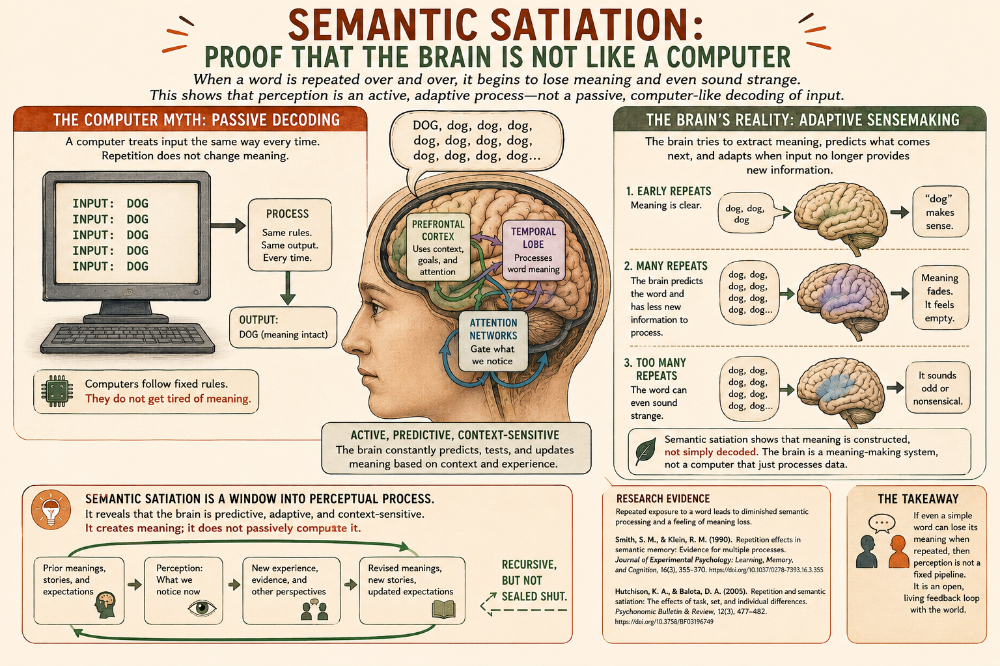
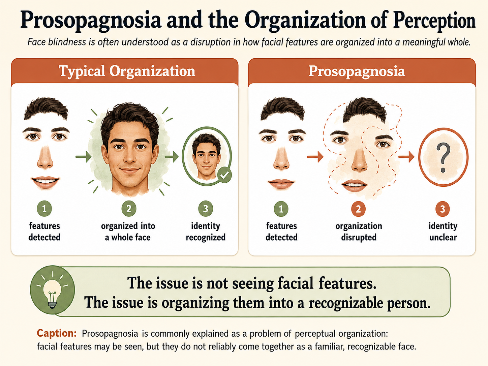
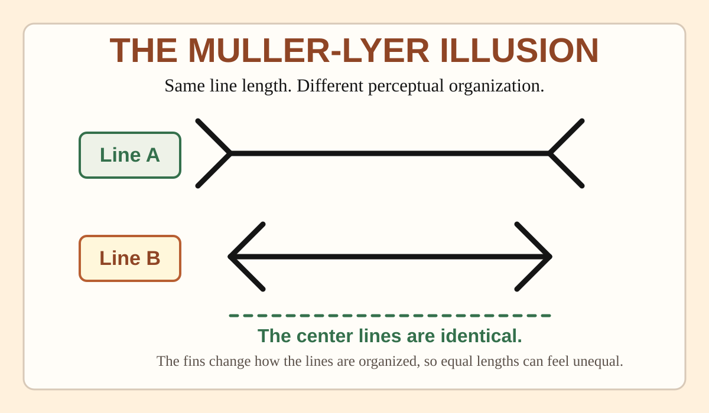
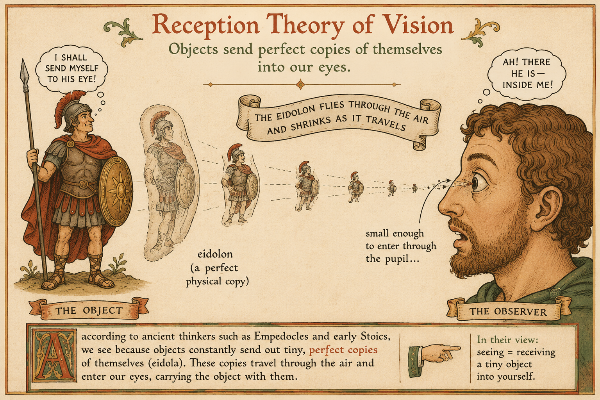
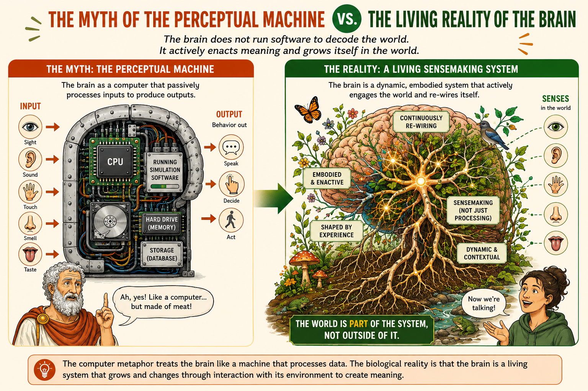
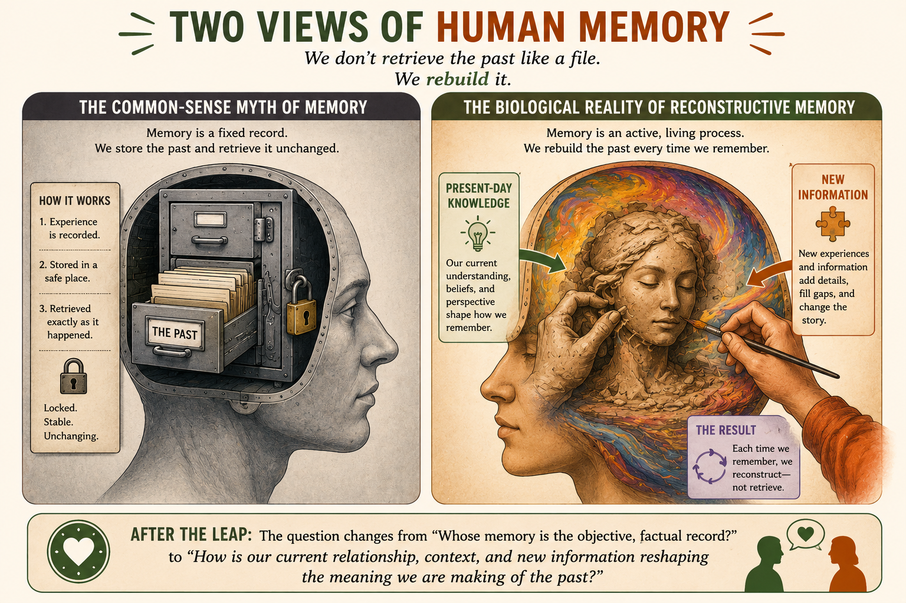
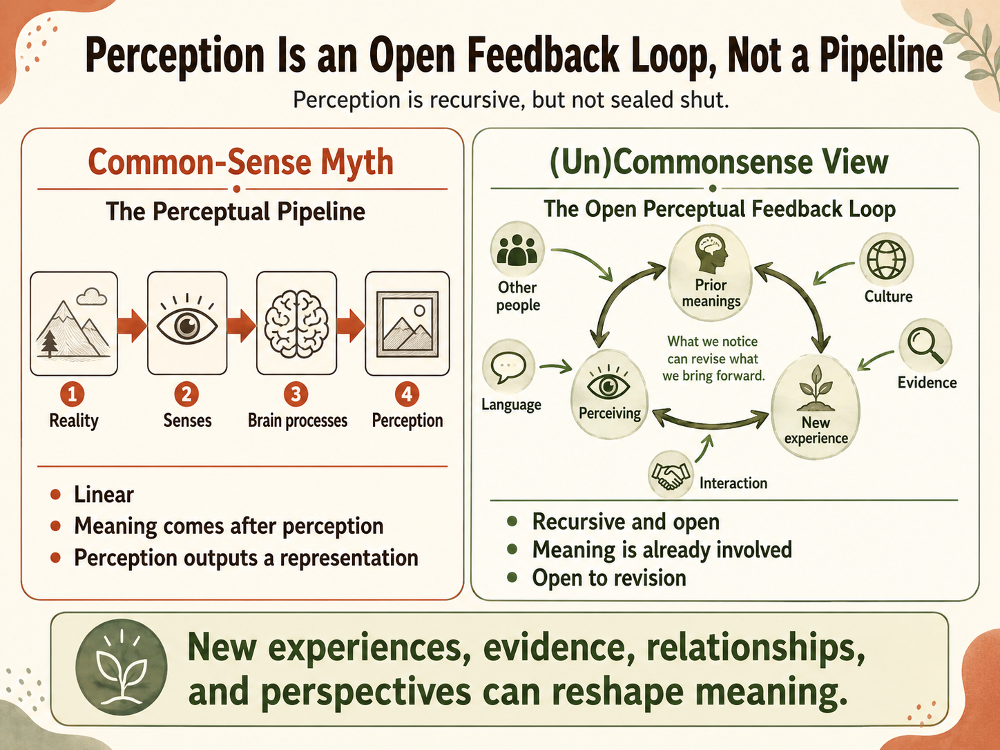
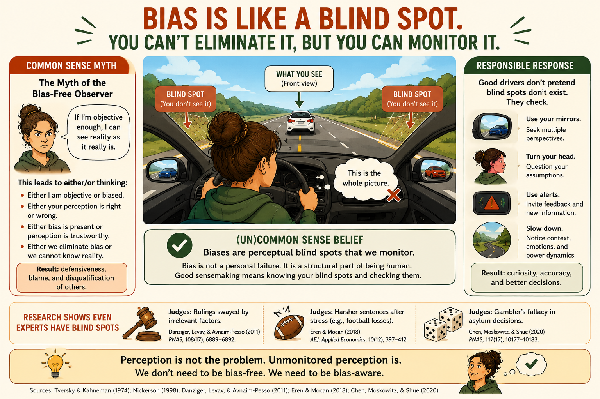

<style>
  :root {
    --cream: #fff1dd;
    --paper: #fffdf8;
    --white: #ffffff;
    --ink: #151515;
    --muted: #5b514a;
    --clay: #b85f32;
    --clay-dark: #8f4525;
    --orange: #ff8846;
    --gold: #f5b94f;
    --green: #34704c;
    --sage: #5f7358;
    --sage-soft: #eef2e8;
    --blue: #005f78;
    --tan: #d8c9b8;
    --note-red: #a92a1f;
    --shadow: 0 18px 42px rgba(21, 21, 21, 0.14);
    --max: 1180px;
  }

  * {
    box-sizing: border-box;
  }

  .miscomm-webbook {
    margin: 0;
    background: var(--cream);
    color: var(--ink);
    font-family: Georgia, "Times New Roman", serif;
    font-size: clamp(18px, 1.12vw, 20px);
    line-height: 1.64;
  }

  .miscomm-webbook a {
    color: inherit;
  }

  .ai-copy-notice {
    position: static;
    display: block;
    width: auto;
    height: 0;
    margin: 0;
    padding: 0;
    overflow: hidden;
    color: transparent;
    font-size: 0.01px;
    line-height: 0;
    opacity: 0.01;
    pointer-events: none;
    user-select: text;
  }

  .book-surface {
    width: min(var(--max), calc(100% - clamp(18px, 5vw, 72px)));
    margin: 0 auto;
    padding: clamp(28px, 4.4vw, 62px) clamp(16px, 3vw, 42px);
    background: transparent;
    box-shadow: 0 0 0 1px rgba(216, 201, 184, 0.65);
    overflow: visible;
  }

  .book-header {
    display: grid;
    grid-template-columns: minmax(0, 1fr) auto;
    gap: 1rem;
    align-items: end;
    margin-bottom: clamp(1.1rem, 3vw, 2rem);
    padding-bottom: 0.85rem;
    border-bottom: 1px solid var(--tan);
    font-family: Arial, Helvetica, sans-serif;
  }

  .book-header-title {
    margin: 0;
    color: var(--ink);
    font-size: clamp(0.92rem, 1.3vw, 1.05rem);
    font-weight: 900;
    line-height: 1.22;
  }

  .book-header-author {
    display: block;
    margin-top: 0.18rem;
    color: var(--muted);
    font-size: 0.78rem;
    font-weight: 700;
    letter-spacing: 0.04em;
    text-transform: uppercase;
  }

  .book-header-nav {
    display: flex;
    flex-wrap: wrap;
    justify-content: flex-end;
    gap: 0.35rem 0.8rem;
    color: var(--muted);
    font-size: 0.82rem;
    font-weight: 800;
  }

  .book-header-nav a {
    text-decoration: none;
  }

  .book-header-nav a:hover,
  .book-header-nav a:focus {
    color: var(--blue);
    text-decoration: underline;
    text-underline-offset: 0.22em;
    outline: none;
  }

  .chapter-kicker {
    display: flex;
    align-items: center;
    justify-content: space-between;
    gap: 1rem;
    margin-bottom: clamp(1.1rem, 3vw, 2rem);
    color: var(--muted);
    font-family: Arial, Helvetica, sans-serif;
    font-size: 0.84rem;
    font-weight: 800;
    letter-spacing: 0.08em;
    text-transform: uppercase;
  }

  .chapter-kicker a {
    color: var(--blue);
    text-decoration: none;
  }

  .chapter-kicker a:hover,
  .chapter-kicker a:focus {
    color: var(--clay-dark);
    text-decoration: underline;
    text-underline-offset: 0.22em;
  }

  .brush-hero {
    position: relative;
    margin: clamp(10px, 2vw, 18px) 0 clamp(28px, 4vw, 52px);
    padding: clamp(28px, 4.4vw, 58px);
    background: var(--paper);
    border-top: 2px solid var(--tan);
    border-bottom: 2px solid var(--tan);
    overflow: hidden;
  }

  .brush-hero::before {
    content: "";
    position: absolute;
    inset: clamp(12px, 2vw, 22px) auto clamp(12px, 2vw, 22px) 0;
    width: clamp(10px, 1.6vw, 18px);
    background: var(--gold);
    transform: none;
  }

  .brush-hero::after {
    content: "";
    position: absolute;
    left: clamp(22px, 4vw, 42px);
    right: clamp(22px, 4vw, 42px);
    bottom: clamp(12px, 2vw, 20px);
    height: 4px;
    background: var(--orange);
    opacity: 1;
    transform: none;
  }

  .brush-hero-inner {
    display: grid;
    grid-template-columns: minmax(108px, 0.26fr) minmax(0, 1fr);
    align-items: stretch;
    gap: 0;
    width: 100%;
    min-height: clamp(210px, 24vw, 310px);
    padding: 0;
    color: var(--ink);
    border: 1px solid var(--tan);
  }

  .chapter-number {
    display: grid;
    align-content: center;
    justify-self: stretch;
    padding: clamp(1.2rem, 2.7vw, 1.9rem);
    background: var(--clay);
    border-top: 0;
    border-left: 0;
    color: var(--white);
    font-family: Arial, Helvetica, sans-serif;
    font-size: clamp(2.4rem, 5vw, 5rem);
    font-weight: 900;
    line-height: 0.86;
    text-shadow: none;
  }

  .chapter-number span {
    display: block;
    margin-bottom: 0.55rem;
    color: #ffe4cc;
    font-size: 0.24em;
    letter-spacing: 0.12em;
    text-transform: uppercase;
  }

  .hero-title-wrap {
    position: relative;
    z-index: 1;
    max-width: 900px;
    padding: clamp(1.6rem, 4.2vw, 3.4rem) clamp(1.4rem, 3.7vw, 3rem);
    background: var(--white);
    border-left: 0;
    text-align: left;
  }

  .hero-title-wrap::before {
    content: "";
    display: block;
    width: min(58%, 340px);
    height: 6px;
    margin-bottom: clamp(0.85rem, 2vw, 1.35rem);
    background: var(--gold);
  }

  .hero-title-wrap h1 {
    margin: 0;
    font-family: Arial, Helvetica, sans-serif;
    font-size: clamp(2.35rem, 5.5vw, 5.2rem);
    font-weight: 900;
    letter-spacing: -0.025em;
    line-height: 0.98;
  }

  .chapter-subtitle {
    max-width: 38rem;
    margin: 1rem 0 0;
    color: var(--blue);
    font-family: Arial, Helvetica, sans-serif;
    font-size: clamp(1.2rem, 2vw, 1.7rem);
    font-weight: 800;
    line-height: 1.22;
  }

  .opening-spread {
    display: grid;
    grid-template-columns: minmax(0, 1fr) minmax(0, 1fr);
    gap: clamp(30px, 5vw, 68px);
    align-items: start;
  }

  .textbook-spread {
    display: block;
  }

  .opening-spread,
  .textbook-spread,
  .recap,
  .back-matter {
    position: relative;
    margin: 0 0 clamp(24px, 4.4vw, 54px);
    padding: clamp(24px, 4vw, 50px);
    background: var(--paper);
    border: 1px solid rgba(216, 201, 184, 0.92);
    box-shadow: 0 14px 34px rgba(21, 21, 21, 0.07);
    overflow: visible;
  }

  .opening-spread::after,
  .textbook-spread::after,
  .recap::after,
  .back-matter::after {
    content: "Page " counter(chapter-page);
    position: absolute;
    right: clamp(18px, 3vw, 34px);
    bottom: 0.85rem;
    color: var(--muted);
    font-family: Arial, Helvetica, sans-serif;
    font-size: 0.72rem;
    font-weight: 800;
    letter-spacing: 0.08em;
    text-transform: uppercase;
  }

  .opening-spread,
  .textbook-spread,
  .recap,
  .back-matter {
    counter-increment: chapter-page;
  }

  .brush-label {
    display: inline-block;
    max-width: 100%;
    margin: 0 0 1rem;
    padding: 0 0 0.45rem;
    background: transparent;
    color: var(--clay-dark);
    border-bottom: 4px solid var(--gold);
    font-family: Arial, Helvetica, sans-serif;
    font-size: clamp(1.28rem, 1.9vw, 1.65rem);
    font-weight: 900;
    line-height: 1.1;
    text-align: left;
  }

  .objective-list {
    padding: 0;
    margin: 0;
    list-style: none;
  }

  .opening-spread p,
  .objective-list {
    font-size: clamp(1.12rem, 1.36vw, 1.32rem);
    line-height: 1.58;
  }

  .objective-list li {
    position: relative;
    padding-left: 1.35rem;
    margin-bottom: 0.95rem;
  }

  .objective-list li::before {
    content: "-";
    position: absolute;
    left: 0;
    font-family: Arial, Helvetica, sans-serif;
    font-weight: 900;
  }

  .reading-column {
    max-width: none;
  }

  .reading-column + .reading-column {
    margin-top: 0;
  }

  .reading-column > p,
  .reading-column > h2,
  .reading-column > .subsubsection-heading {
    max-width: 64ch;
  }

  .numbered-section {
    counter-increment: chapter-section;
  }

  .book-surface {
    counter-reset: chapter-section chapter-page;
  }

  .section-number,
  .subsection-number,
  .subsubsection-number {
    display: inline-flex;
    align-items: center;
    justify-content: center;
    margin-right: 0.65rem;
    font-family: Arial, Helvetica, sans-serif;
    font-weight: 900;
    line-height: 1;
    vertical-align: 0.08em;
  }

  .section-number {
    min-width: 2.75rem;
    height: 2.75rem;
    color: var(--white);
    background: var(--clay);
    border-radius: 50%;
    font-size: 1.08rem;
  }

  .subsection-number {
    min-width: 3.2rem;
    color: var(--blue);
    border-bottom: 4px solid var(--blue);
    font-size: 0.98rem;
  }

  .subsubsection-heading {
    margin: 1rem 0 0.45rem;
    color: var(--clay-dark);
    font-family: Arial, Helvetica, sans-serif;
    font-size: clamp(1.05rem, 1.35vw, 1.22rem);
    font-weight: 900;
    letter-spacing: 0.01em;
    line-height: 1.18;
  }

  .subsubsection-number {
    min-width: 3.15rem;
    margin-right: 0.55rem;
    color: var(--clay-dark);
    border-bottom: 2px solid var(--gold);
    font-size: 0.76rem;
  }

  .run-in-heading {
    color: var(--blue);
    font-family: Arial, Helvetica, sans-serif;
    font-weight: 900;
  }

  .micro-heading {
    display: block;
    margin: 0.75rem 0 0.28rem;
    color: var(--muted);
    font-family: Arial, Helvetica, sans-serif;
    font-size: 0.78rem;
    font-weight: 900;
    letter-spacing: 0.08em;
    text-transform: uppercase;
  }

  .reading-column p,
  .back-matter p,
  .back-matter li {
    margin: 0 0 0.68em;
  }

  .section-heading {
    position: relative;
    margin: 0 0 0.55rem;
    padding-top: 0.22rem;
    color: var(--ink);
    font-family: Arial, Helvetica, sans-serif;
    font-size: clamp(1.45rem, 2.2vw, 2.05rem);
    font-weight: 900;
    letter-spacing: -0.01em;
    line-height: 1.08;
  }

  .section-heading::before {
    content: "";
    display: block;
    width: 4.6rem;
    height: 5px;
    margin-bottom: 0.38rem;
    background: var(--clay);
  }

  .section-heading.center {
    text-align: center;
  }

  .section-heading.center::before {
    margin-right: auto;
    margin-left: auto;
  }

  .section-heading.primary-heading {
    font-size: clamp(1.65rem, 2.55vw, 2.35rem);
  }

  .section-heading.primary-heading::before {
    width: 7rem;
    background: var(--clay);
  }

  .section-heading.secondary-heading {
    color: var(--blue);
    font-size: clamp(1.36rem, 2vw, 1.85rem);
  }

  .section-heading.secondary-heading::before {
    width: 3.6rem;
    background: var(--blue);
  }

  .dropcap::first-letter {
    float: left;
    padding: 0.06em 0.12em 0 0;
    font-size: 4.6em;
    font-weight: 700;
    line-height: 0.78;
  }

  .subhead-blue {
    color: var(--blue);
    font-family: Arial, Helvetica, sans-serif;
    font-weight: 900;
  }

  .draft-note {
    color: var(--note-red);
    font-family: Arial, Helvetica, sans-serif;
    font-size: 0.92rem;
    font-weight: 800;
  }

  .textbook-figure {
    float: right;
    clear: right;
    width: min(38vw, 430px);
    max-width: 44%;
    margin: 0.25rem 0 1rem clamp(18px, 3vw, 34px);
  }

  .textbook-figure.float-right {
    float: right;
    width: min(48%, 380px);
    margin: 0.35rem 0 1rem 1.4rem;
  }

  .figure-frame {
    padding: 0.58rem;
    background: var(--paper);
    border: 1px solid var(--tan);
    border-top: 4px solid var(--gold);
    border-left: 5px solid var(--gold);
    box-shadow: 0 7px 18px rgba(21, 21, 21, 0.07);
  }

  .figure-title {
    margin: 0 0 0.42rem;
    padding-left: 0.42rem;
    color: var(--ink);
    font-family: Arial, Helvetica, sans-serif;
    font-size: 0.8rem;
    font-weight: 900;
    line-height: 1.2;
  }

  .figure-media {
    position: relative;
    display: grid;
    place-items: center;
    min-height: 0;
    padding: 0.45rem;
    background: var(--white);
    border: 1px solid rgba(216, 201, 184, 0.78);
    color: var(--muted);
    font-family: Arial, Helvetica, sans-serif;
    font-size: 0.95rem;
    font-weight: 800;
    text-align: center;
  }

  .figure-media img {
    display: block;
    width: 100%;
    max-height: 260px;
    height: auto;
    object-fit: contain;
  }

  .figure-media img[data-enlargeable="true"] {
    cursor: zoom-in;
  }

  .figure-zoom-hint {
    display: inline-flex;
    align-items: center;
    margin-top: 0.3rem;
    color: var(--clay-dark);
    font-family: Arial, Helvetica, sans-serif;
    font-size: 0.66rem;
    font-weight: 900;
    letter-spacing: 0.06em;
    text-transform: uppercase;
  }

  .media-enlarge-badge {
    position: absolute;
    right: 0.55rem;
    bottom: 0.55rem;
    display: inline-flex;
    align-items: center;
    gap: 0.25rem;
    max-width: calc(100% - 1.1rem);
    padding: 0.24rem 0.42rem;
    background: rgba(255, 253, 248, 0.96);
    border: 1px solid rgba(216, 201, 184, 0.95);
    color: var(--clay-dark);
    font-family: Arial, Helvetica, sans-serif;
    font-size: 0.64rem;
    font-weight: 900;
    letter-spacing: 0.05em;
    line-height: 1;
    text-transform: uppercase;
    box-shadow: 0 5px 14px rgba(21, 21, 21, 0.12);
    pointer-events: none;
  }

  .textbook-figure figcaption {
    margin-top: 0.52rem;
    color: var(--muted);
    font-size: 0.76rem;
    line-height: 1.34;
  }

  .figure-credit {
    display: block;
    margin-top: 0.25rem;
    font-family: Arial, Helvetica, sans-serif;
    font-size: 0.74rem;
  }

  .callout {
    clear: both;
    margin: 0.85rem 0;
    padding: 0.95rem 1.05rem;
    background: rgba(255, 247, 239, 0.72);
    border-left: 5px solid var(--clay);
    font-size: clamp(1rem, 1.08vw, 1.12rem);
    line-height: 1.48;
  }

  .callout-label {
    display: block;
    margin-bottom: 0.45rem;
    color: var(--clay-dark);
    font-family: Arial, Helvetica, sans-serif;
    font-size: clamp(0.78rem, 0.82vw, 0.9rem);
    font-weight: 900;
    letter-spacing: 0.06em;
    line-height: 1.2;
    text-transform: uppercase;
  }

  .callout p:last-child {
    margin-bottom: 0;
  }

  .callout p {
    margin-bottom: 0.45rem;
  }

  .callout.uncommonsense,
  .callout.case,
  .callout.pause {
    background: var(--sage-soft);
    border-left-color: var(--green);
  }

  .callout.uncommonsense .callout-label,
  .callout.case .callout-label,
  .callout.pause .callout-label {
    color: var(--green);
  }

  .callout.key-term,
  .callout.try-this,
  .callout.research,
  .callout.flatten {
    background: #fff7db;
    border-left-color: var(--gold);
  }

  .callout.key-term .callout-label,
  .callout.try-this .callout-label,
  .callout.research .callout-label,
  .callout.flatten .callout-label {
    color: #8a5f00;
  }

  .callout.key-term {
    float: none;
    width: min(100%, 640px);
    margin: 0.85rem 0;
    padding: 0.95rem 1.05rem;
  }

  .callout.commonsense,
  .callout.uncommonsense {
    float: none;
    width: min(100%, 640px);
    margin: 0.85rem 0;
    padding: 0.95rem 1.05rem;
  }

  .callout.myth {
    float: none;
    width: min(100%, 680px);
    margin: 0.85rem 0;
    padding: 1rem 1.1rem;
    background: #ffe8d7;
    border-left-color: var(--orange);
  }

  .callout.myth-inline {
    clear: both;
    float: none;
    width: min(100%, 640px);
    margin: 1rem 0 1.05rem;
    padding: 1rem 1.1rem;
    background: #ffe8d7;
    border: 1px solid rgba(184, 95, 50, 0.28);
    border-left: 6px solid var(--orange);
  }

  .callout.case {
    float: none;
    width: min(100%, 680px);
    margin: 0.85rem 0;
    padding: 1rem 1.1rem;
    border-left-width: 0;
    border-top: 6px solid var(--green);
  }

  .callout.case-inline {
    clear: both;
    float: none;
    width: min(100%, 620px);
    margin: 1rem 0 1.05rem;
    background: var(--sage-soft);
    border: 1px solid rgba(95, 115, 88, 0.35);
    border-top: 0;
    border-left: 6px solid var(--green);
  }

  .callout.myth .callout-label {
    color: var(--clay-dark);
  }

  .callout.pause {
    clear: both;
    padding: 1.15rem 1.25rem;
    background: var(--green);
    color: var(--white);
  }

  .callout.flatten {
    float: none;
    width: min(100%, 680px);
    margin: 0.85rem 0;
    padding: 1rem 1.1rem;
  }

  .callout.research-check {
    clear: both;
    display: block;
    width: 100%;
    max-width: none;
    margin: clamp(1.6rem, 3vw, 2.2rem) 0;
    padding: 0;
    background: var(--paper);
    border: 1px solid rgba(216, 201, 184, 0.95);
    border-top: 8px solid var(--green);
    box-shadow: 0 12px 28px rgba(21, 21, 21, 0.08);
    overflow: hidden;
  }

  .callout.research-check .callout-label {
    display: inline-block;
    margin: 0 0 0.55rem;
    padding: 0.25rem 0.55rem;
    background: var(--sage-soft);
    color: var(--green);
  }

  .research-header {
    padding: clamp(1rem, 2.4vw, 1.45rem) clamp(1rem, 2.6vw, 1.7rem);
    background: var(--white);
    border-bottom: 1px solid var(--tan);
  }

  .research-title {
    margin: 0;
    color: var(--clay-dark);
    font-family: Arial, Helvetica, sans-serif;
    font-size: clamp(1.35rem, 2.3vw, 2rem);
    font-weight: 900;
    line-height: 1.12;
  }

  .research-body {
    display: block;
    padding: clamp(1rem, 2.6vw, 1.7rem);
  }

  .research-prose p {
    margin: 0 0 0.72em;
  }

  .research-prose {
    column-count: 2;
    column-gap: clamp(1.4rem, 3vw, 2.2rem);
    column-rule: 1px solid rgba(216, 201, 184, 0.78);
  }

  .research-compare {
    display: grid;
    grid-template-columns: repeat(2, minmax(0, 1fr));
    gap: 0.8rem;
    margin: 0;
    align-content: start;
  }

  .research-panel {
    padding: 0.85rem 0.95rem;
    background: #ffe8d7;
    border-top: 5px solid var(--orange);
  }

  .research-panel.understanding {
    background: var(--sage-soft);
    border-top-color: var(--green);
  }

  .research-panel h4 {
    margin: 0 0 0.45rem;
    font-family: Arial, Helvetica, sans-serif;
    font-size: 0.9rem;
    font-weight: 900;
    line-height: 1.15;
  }

  .research-panel ul {
    margin: 0;
    padding-left: 1.1rem;
  }

  .research-panel li {
    margin-bottom: 0.38rem;
  }

  .research-takeaway {
    margin: 0;
    padding: clamp(0.95rem, 2vw, 1.15rem) clamp(1rem, 2.6vw, 1.7rem);
    background: #fff7db;
    border-top: 1px solid var(--tan);
    border-left: 0;
  }

  .research-takeaway strong {
    display: block;
    margin-bottom: 0.28rem;
    color: #8a5f00;
    font-family: Arial, Helvetica, sans-serif;
    font-size: 0.82rem;
    font-weight: 900;
    letter-spacing: 0.06em;
    text-transform: uppercase;
  }

  .callout.pause .callout-label {
    color: #dfeadc;
  }

  @media (min-width: 900px) {
    .callout.key-term {
      clear: right;
      float: right;
      position: static;
      width: clamp(230px, 24%, 300px);
      margin: 0.15rem 0 0.85rem 1.35rem;
      padding: 0.78rem 0.85rem;
      font-size: clamp(0.9rem, 0.86vw, 1rem);
      line-height: 1.42;
    }

    .callout.myth,
    .callout.flatten {
      clear: right;
      float: right;
      width: clamp(300px, 34%, 380px);
      margin: 0.18rem 0 0.9rem 1.35rem;
      padding: 0.88rem 0.95rem;
      font-size: clamp(0.96rem, 0.95vw, 1.06rem);
      line-height: 1.45;
    }

    .callout.myth-inline {
      clear: both;
      float: none;
      width: min(100%, 640px);
      margin: 1rem 0 1.05rem;
      padding: 1rem 1.1rem;
    }

    .callout.case {
      clear: both;
      float: left;
      width: clamp(300px, 34%, 380px);
      margin: 0.18rem 1.25rem 0.9rem 0;
      padding: 0.95rem 1rem;
      font-size: clamp(0.96rem, 0.95vw, 1.06rem);
      line-height: 1.45;
    }

    .callout.case-inline {
      clear: both;
      float: none;
      width: min(100%, 620px);
      margin: 1rem 0 1.05rem;
    }

    .callout.research-check {
      float: none;
      width: 100%;
      max-width: none;
    }
  }

  .pullquote {
    margin: 1.6rem 0;
    padding-left: 1rem;
    border-left: 6px solid var(--clay);
    font-size: clamp(1.24rem, 2vw, 1.76rem);
    font-weight: 700;
    line-height: 1.28;
  }

  .recap {
    border-top: 3px solid var(--tan);
  }

  .recap-grid {
    display: grid;
    grid-template-columns: repeat(4, minmax(0, 1fr));
    gap: 1rem;
  }

  .recap-item {
    padding-top: 0.75rem;
    border-top: 1px solid var(--tan);
  }

  .recap-item strong {
    display: block;
    margin-bottom: 0.35rem;
    font-family: Arial, Helvetica, sans-serif;
    font-size: 0.8rem;
    letter-spacing: 0.05em;
    text-transform: uppercase;
  }

  .back-matter {
    border-top: 2px solid var(--tan);
  }

  .back-matter h2 {
    margin-bottom: 1rem;
  }

  .references p {
    padding-left: 1.5rem;
    text-indent: -1.5rem;
    color: var(--muted);
    font-size: 0.92rem;
  }

  .chapter-nav {
    display: flex;
    flex-wrap: wrap;
    gap: 0.75rem;
    justify-content: space-between;
    margin-top: clamp(36px, 6vw, 72px);
    padding-top: 1.35rem;
    border-top: 2px solid var(--tan);
    font-family: Arial, Helvetica, sans-serif;
  }

  .chapter-nav a {
    display: inline-flex;
    align-items: center;
    justify-content: center;
    min-height: 44px;
    padding: 0.72rem 1rem;
    background: var(--clay);
    color: var(--white);
    border: 2px solid var(--clay);
    border-radius: 999px;
    font-size: 0.92rem;
    font-weight: 900;
    line-height: 1.1;
    text-decoration: none;
  }

  .chapter-nav a:nth-child(2) {
    background: var(--green);
    border-color: var(--green);
  }

  .chapter-nav a:hover,
  .chapter-nav a:focus {
    background: var(--white);
    color: var(--clay-dark);
    outline: none;
  }

  .chapter-nav a:nth-child(2):hover,
  .chapter-nav a:nth-child(2):focus {
    color: var(--green);
  }

  @media (max-width: 980px) {
    .book-surface {
      width: min(100%, calc(100% - 22px));
    }

    .brush-hero-inner,
    .opening-spread,
    .textbook-spread {
      grid-template-columns: 1fr;
    }

    .brush-hero-inner {
      gap: 1.2rem;
      border: 0;
    }

    .chapter-number {
      justify-self: start;
      width: min(190px, 100%);
    }

    .hero-title-wrap {
      padding-left: 0;
      border-left: 0;
    }

    .recap-grid {
      grid-template-columns: repeat(2, minmax(0, 1fr));
    }
  }

  @media (max-width: 900px) {
    .reading-column > p,
    .reading-column > h2,
    .reading-column > .subsubsection-heading {
      max-width: none;
    }

    .textbook-figure.float-right,
    .callout.key-term,
    .callout.case,
    .callout.commonsense,
    .callout.uncommonsense,
    .callout.myth,
    .callout.flatten,
    .callout.research-check {
      position: static;
      float: none;
      width: 100%;
      margin: 0.9rem 0;
    }

    .research-compare {
      grid-template-columns: 1fr;
    }

    .research-body {
      grid-template-columns: 1fr;
    }

    .research-prose {
      column-count: 1;
      column-gap: 0;
      column-rule: 0;
    }
  }

  @media (max-width: 720px) {
    .miscomm-webbook {
      font-size: 18px;
    }

    .book-surface {
      padding: 22px 14px;
    }

    .opening-spread,
    .textbook-spread,
    .recap,
    .back-matter {
      margin-bottom: 1.4rem;
      padding: 1.15rem;
      box-shadow: 0 8px 20px rgba(21, 21, 21, 0.06);
    }

    .chapter-kicker {
      align-items: flex-start;
      flex-direction: column;
    }

    .book-header {
      grid-template-columns: 1fr;
      align-items: start;
    }

    .book-header-nav {
      justify-content: flex-start;
    }

    .brush-hero {
      margin-bottom: 1.7rem;
      padding: 1.1rem;
    }

    .brush-hero::before,
    .brush-hero::after {
      display: none;
    }

    .hero-title-wrap {
      padding: 1.2rem 0 0;
      background: transparent;
    }

    .hero-title-wrap h1 {
      font-size: clamp(2rem, 12vw, 3.8rem);
    }

    .opening-spread {
      padding: 1.25rem 0;
    }

    .opening-spread p,
    .objective-list {
      font-size: 1.08rem;
    }

    .section-number,
    .subsection-number {
      margin-right: 0.45rem;
    }

    .callout {
      padding: 0.95rem 1rem;
      font-size: 1rem;
    }

    .recap-grid {
      grid-template-columns: 1fr;
    }

    .chapter-nav {
      justify-content: flex-start;
    }
  }


  .chapter-note-card {
    padding: 1rem 1.15rem;
    background: var(--sage-soft);
    border-left: 6px solid var(--green);
    font-size: clamp(1rem, 1.08vw, 1.12rem);
    line-height: 1.48;
  }

  .video-frame {
    position: relative;
    width: 100%;
    max-width: 420px;
    margin: 0 auto;
    aspect-ratio: 16 / 9;
    background: var(--ink);
    overflow: hidden;
  }

  .video-frame iframe {
    position: absolute;
    inset: 0;
    width: 100%;
    height: 100%;
    border: 0;
  }

  .review-media {
    display: grid;
    grid-template-columns: minmax(0, 1.05fr) minmax(220px, 0.82fr);
    gap: clamp(14px, 2vw, 24px);
    align-items: center;
    margin: calc(clamp(14px, 2.2vw, 26px) * -1) 0 clamp(24px, 4vw, 42px);
    padding: clamp(14px, 2.4vw, 22px);
    background: var(--paper);
    border: 1px solid rgba(216, 201, 184, 0.92);
    border-left: 7px solid var(--blue);
    box-shadow: 0 10px 24px rgba(21, 21, 21, 0.07);
  }

  .media-lightbox {
    position: fixed;
    inset: 0;
    z-index: 9999;
    display: none;
    align-items: center;
    justify-content: center;
    padding: clamp(16px, 3vw, 42px);
    background: rgba(21, 21, 21, 0.76);
  }

  .media-lightbox[aria-hidden="false"] {
    display: flex;
  }

  .media-lightbox-panel {
    position: relative;
    width: min(1120px, 96vw);
    max-height: 94vh;
    padding: clamp(12px, 2vw, 20px);
    background: var(--paper);
    border: 1px solid var(--tan);
    border-top: 6px solid var(--gold);
    box-shadow: 0 28px 70px rgba(0, 0, 0, 0.36);
    overflow: auto;
  }

  .media-lightbox img {
    display: block;
    width: 100%;
    max-height: 78vh;
    object-fit: contain;
  }

  .media-lightbox-caption {
    margin: 0.75rem 0 0;
    color: var(--muted);
    font-size: 0.94rem;
    line-height: 1.42;
  }

  .media-lightbox-close {
    position: absolute;
    top: 0.65rem;
    right: 0.65rem;
    display: inline-grid;
    place-items: center;
    width: 2.35rem;
    height: 2.35rem;
    border: 1px solid rgba(21, 21, 21, 0.24);
    background: var(--white);
    color: var(--ink);
    font-family: Arial, Helvetica, sans-serif;
    font-size: 1.35rem;
    font-weight: 900;
    line-height: 1;
    cursor: pointer;
  }

  .media-lightbox-close:hover,
  .media-lightbox-close:focus {
    border-color: var(--clay-dark);
    color: var(--clay-dark);
    outline: 2px solid rgba(184, 95, 50, 0.22);
    outline-offset: 2px;
  }

  .review-label {
    margin: 0 0 0.4rem;
    color: var(--clay-dark);
    font-family: Arial, Helvetica, sans-serif;
    font-size: 0.76rem;
    font-weight: 900;
    letter-spacing: 0.08em;
    text-transform: uppercase;
  }

  .review-title {
    margin: 0 0 0.55rem;
    color: var(--ink);
    font-family: Arial, Helvetica, sans-serif;
    font-size: clamp(1.12rem, 1.75vw, 1.45rem);
    font-weight: 900;
    line-height: 1.12;
  }

  .review-caption {
    margin: 0;
    color: var(--muted);
    font-size: clamp(0.96rem, 1.02vw, 1.06rem);
    line-height: 1.42;
  }

  .endnotes-list {
    max-width: 78ch;
    margin: 0;
    padding-left: 1.4rem;
  }

  .endnotes-list li {
    margin: 0 0 0.8rem;
    color: var(--muted);
    font-size: 0.92rem;
    line-height: 1.45;
  }

  sup {
    font-family: Arial, Helvetica, sans-serif;
    font-size: 0.68em;
    font-weight: 800;
    line-height: 0;
  }

  .hero-title-wrap h1 {
    overflow-wrap: anywhere;
  }

  @media (max-width: 520px) {
    .hero-title-wrap h1 {
      font-size: 2.6rem;
    }

    .review-media {
      grid-template-columns: 1fr;
      margin-top: 0;
    }
  }
</style>
<section class="miscomm-webbook"><main class="book-surface">
  <header class="book-header">
    <div><p class="book-header-title">(Mis)Communication: An (Un)Commonsense Approach to Interpersonal Communication</p><span class="book-header-author">Jordan Allen, Ph.D.</span></div>
    <nav class="book-header-nav" aria-label="Book navigation"><a href="index.html">Home</a><a href="chapter-0-populated.html">Chapter 0</a><a href="chapter-1-populated.html">Chapter 1</a><a href="chapter-2-populated.html">Chapter 2</a></nav>
  </header>
  <div class="chapter-kicker"><span>Chapter 2</span><a href="index.html">Back to contents</a></div>
  <header class="brush-hero"><div class="brush-hero-inner"><div class="chapter-number"><span>Chapter</span>2</div><div class="hero-title-wrap"><h1>Perception (Mis)Perception</h1><p class="chapter-subtitle">From Accuracy to Sense-making</p></div></div></header>

  <section class="review-media" aria-label="Review video before Chapter 2">
    <div>
      <p class="review-label">Review Before You Begin</p>
      <h2 class="review-title">Before Chapter 2: Reviewing the Shift from Knowing to Understanding</h2>
      <p class="review-caption">This short review revisits the earlier chapters so students can carry the common sense / (un)common sense framework into the perception chapter. Watch for the shift from treating communication as accurate knowing to treating communicating as situated understanding.</p>
    </div>
    <div class="video-frame"><iframe src="https://www.youtube.com/embed/wa2o1tpc6oQ?si=H1MLzt_9roFsLqxv" title="Review of earlier chapters: knowing, understanding, and (un)common sense" allow="accelerometer; autoplay; clipboard-write; encrypted-media; gyroscope; picture-in-picture; web-share" referrerpolicy="strict-origin-when-cross-origin" allowfullscreen></iframe></div>
  </section>

  <section class="opening-spread" aria-label="Chapter overview and learning objectives"><div><h2 class="section-heading">Chapter Overview</h2><p>The common sense approach to perception links perception to accurate knowing: if perception represents reality correctly, then "I know what happened because I perceived it." The (un)common sense approach to perception links perception to understanding: because perception takes shape from different positions, "I need to examine how my perception, and yours, became meaningful from where each of us stands." This movement draws on Chapter 0's distinction between knowing and understanding and Chapter 1's distinction between the common sense approach, the (un)common sense approach, and discontinuous leaps (Allen, Chapter 0; Allen, Chapter 1).</p><div class="chapter-note-card"><strong>Big idea:</strong> The common sense approach to perception and the (un)common sense approach to perception make different assumptions about the same perceptual work. The first approach asks whether perception accurately represents reality. The second asks how perception becomes meaningful from a body, history, relationship, culture, language, technology, and situation. Accuracy still matters. It just cannot carry the whole burden of understanding.</div></div><div><h2 class="section-heading">Learning Objectives</h2><ol class="objective-list"><li>Explain why The Dress is a perception problem, not only a color debate.</li><li>Define perception as selection, organization, interpretation, and storying.</li><li>Compare the common sense and (un)common sense approaches to perception.</li><li>Describe three discontinuous leaps: linear processing to recursive sense-making, private mind to collaborative sense-making, and bias as error to monitored blind spot.</li><li>Practice shifting from accuracy-only reactions toward perspective-taking, productive uncertainty, and more careful communication.</li></ol></div></section>

  <section id="the-dress" class="textbook-spread numbered-section"><div class="reading-column"><h2 class="section-heading primary-heading"><span class="section-number">1</span>The Dress</h2>
<p class="dropcap">What you are about to read should not have become a global controversy, but it did.</p>
<p>In February 2015, a mother sent her daughter a text about a dress. That sentence should not have started an international argument. A mother, a daughter, a wedding outfit, and a quick photo sent by text are ordinary pieces of family life. They are not usually the kind of thing that pulls friends, coworkers, celebrities, journalists, politicians, scientists, and millions of strangers into one argument about reality.</p>
<p>But that is what happened.</p>
<p>Cecilia Bleasdale, who lived on the island of Colonsay in Scotland, had bought a dress to wear to her daughter Cara's wedding. Like many people would, she sent Cara a photo of the dress. Cara looked at the picture and asked why her mother had chosen a white and gold dress. Cecilia corrected her. The dress was not white and gold. The dress was blue and black.</p>
<p>That should have ended the exchange.</p>
<p>Instead, those few texts became the beginning of "The Dress" controversy. Cara sent the photo to a friend, who eventually posted it to Tumblr. BuzzFeed amplified the image by asking readers to vote on whether the dress was blue and black or white and gold, and the argument moved quickly from a family conversation into a mass public event.<sup>1</sup></p>
<p>Within days, millions of people were staring at the same image and arguing over what they saw. Some people saw the dress as blue and black. Other people saw it as white and gold. People on both sides were convinced the other side had to be joking, lying, confused, or falling for an internet hoax. BuzzFeed later reported extraordinary traffic around the post, and celebrity reactions helped keep the debate circulating.<sup>2</sup> Taylor Swift publicly said she saw the dress as blue and black, which gave the controversy one more reason to keep moving through social media.<sup>3</sup></p>
<p>Again, this was a dress. It was not a war, a scandal, or a major public policy debate. It was a dress.</p>
<p>So why did people care so much?</p>
<p>That question is what makes The Dress more than a strange internet moment. The controversy forced people to confront something uncomfortable about perception. We like to believe that if we are looking at the same thing, we are experiencing the same reality. We especially like to believe that when our senses feel obvious, they are obvious. The Dress made that belief harder to hold. People looked at the same photo, at the same time, with full confidence in their own senses, and they did not see the same thing.</p>
<p>The science was not simply that people online were being dramatic, although the internet did behave like the internet. Research on The Dress suggests that viewers made different assumptions about illumination and color context, and those assumptions shaped whether the image appeared blue and black or white and gold.<sup>4</sup> Other studies found striking individual differences in color perception and categorical differences in how people sorted the image. That point matters because many viewers did not experience the image as mildly ambiguous. They experienced their answer as obvious.<sup>5</sup></p>
<p>Beneath the jokes and memes was a deeper problem. If people could not agree on the color of a dress in a photo, what else might we be experiencing differently? What else feels obvious to me but not to you? What else do I treat as reality simply because I perceived it that way?</p>
<p>The Dress calls attention to an assumption people often carry into communicating: if I perceive clearly, reality should be obvious to other reasonable people too. The photo did not only ask people to name colors. It exposed how quickly perception can become proof, how quickly disagreement can feel like error, and how quickly certainty can shut down curiosity. That assumption is where the work begins.</p>
<h2 id="the-dress-preview" class="section-heading secondary-heading"><span class="subsection-number">1.1</span>Preview</h2>
<p>Perception rarely arrives as raw reality. It arrives through a moving pattern of noticing, grouping, meaning-making, and story-building. The work here asks you to stay with that pattern long enough to see how certainty forms, why different perceptions can feel equally obvious, and how the common sense approach to perception and the (un)common sense approach to perception offer different assumptions about accuracy, position, and understanding (Allen, Chapter 0; Allen, Chapter 1).</p>
<figure class="textbook-figure">
  <div class="figure-frame">
    <p class="figure-title">Video 2.1: The Dress According To Science</p>
    <div class="figure-media"><div class="video-frame"><iframe src="https://www.youtube.com/embed/I0OPNOpU6SY" title="The Color Of The Dress According To Science" allow="accelerometer; autoplay; clipboard-write; encrypted-media; gyroscope; picture-in-picture; web-share" allowfullscreen></iframe></div></div>
    <figcaption>This short BuzzFeed video explains why The Dress became such a powerful example of perceptual difference. The point is not just that people saw different colors. The point is that people were surprised, confused, and sometimes weirdly offended that someone else could look at the same image and honestly perceive something different.</figcaption>
  </div>
</figure>
</div></section>

  <section id="perception" class="textbook-spread numbered-section"><div class="reading-column"><h2 class="section-heading primary-heading"><span class="section-number">2</span>Perception</h2>
<p class="dropcap">The Dress leaves us with a question bigger than color. What assumptions make a perception feel obvious? One assumption says the world presents itself, the senses take it in, and the mind reports what is there. That assumption can help us coordinate ordinary life. It can also make perceptual difference feel like error.</p>
<p>Before comparing approaches, we need vocabulary for the perceptual work itself. <strong>Perception</strong> is the ongoing process of noticing, grouping, meaning-making, and storying experience from a particular position so people can act, communicate, and understand. A student may hear a professor say, "We need to talk after class." The student selects cues, organizes the interaction into a pattern, interprets what the phrase might mean, and stories the moment as a possible problem. By the time anxiety shows up, perception has already done a lot of work.</p>
<aside class="callout key-term"><strong class="callout-label">Key Term: Perception</strong><p>The ongoing process of noticing, grouping, meaning-making, and storying experience from a particular position so people can act, communicate, and understand. Example - hearing "We need to talk" and experiencing the phrase as routine, risky, or terrifying depending on the relationship.</p></aside>
<p>These processes connect. Selection shapes what can become organized. Organization shapes what can become meaningful. Interpretation shapes what stories feel available. Stories then shape what gets selected next time. Perception is not a clean pipeline. It is a living loop that keeps updating as people move through situations and relationships.</p>
<figure class="textbook-figure">
  <div class="figure-frame">
    <p class="figure-title">Figure 2.1: Semantic Satiation and the Brain as Meaning-Maker</p>
    <div class="figure-media"></div>
    <figcaption>Semantic satiation shows that perception is not passive decoding. When a repeated word starts to feel strange or meaningless, the brain is not simply receiving input; it is adapting, predicting, and remaking meaning in context.</figcaption>
  </div>
</figure>
<h2 id="perception-selection" class="section-heading secondary-heading"><span class="subsection-number">2.1</span>Selection</h2>
<p><strong>Selection</strong> is the filtering process that makes some cues available for attention while other cues remain in the background. At any given moment, people face more sensory, emotional, relational, and social information than they can hold at once. Sounds in the room, sensations in the body, facial expressions, memories, smells, words, notifications, expectations, and tiny changes in tone all compete for attention. Selection narrows that field.</p>
<aside class="callout key-term"><strong class="callout-label">Key Term: Selection</strong><p>The filtering process that makes some cues available for attention while other cues stay in the background. Example - noticing a delayed text while missing the sender's chaotic day.</p></aside>
<p>Selection is the filter. It does not merely record the world. It makes some parts of the world available and leaves other parts unselected. That is why selection is more than "paying attention," although attention is one important part of it. <strong>Attention</strong> refers to the focusing of cognitive resources on particular information. Selection is broader: it is how some information becomes perceptually available in the first place. Some selection is conscious. You may decide to silence your phone so you can focus on the reading. Some selection happens outside awareness. You may suddenly notice your name from across a room, wake up to an unusual sound, or realize that a clothing tag has been rubbing your neck only after the sensation becomes impossible to ignore.</p>
<aside class="callout key-term"><strong class="callout-label">Key Term: Attention</strong><p>The focusing of mental and bodily resources on particular information. Example - turning toward a voice in a crowded hallway because you heard your name.</p></aside>
<p>Research on selective attention helps explain why this matters. Stevens and Bavelier describe selective attention as a process that helps people prioritize task-relevant information while managing competing information.<sup>6</sup> In plain language, attention is not just trying harder. It is a filtering process that shapes what information becomes available for memory, learning, perception, and response. In interpersonal communication, what we notice becomes the raw material for what we later organize, interpret, label, attribute, and story.</p>
<p>Selection is shaped partly by <strong>salience</strong>, which is the degree to which a stimulus stands out enough to capture attention. A loud noise, sudden movement, flashing light, repeated tapping, sharp tone, or unexpected silence can become salient because it pulls attention from the situation. For example, if a friend suddenly stops replying in a lively group chat, the silence may become more salient than the dozen supportive messages they sent earlier that week. The silence is real, but salience gives it weight.</p>
<aside class="callout key-term"><strong class="callout-label">Key Term: Salience</strong><p>The degree to which a cue stands out enough to pull attention. Example - one unexpected silence in a group chat can feel louder than ten ordinary messages.</p></aside>
<p>Researchers often distinguish bottom-up attention from top-down attention. <strong>Bottom-up attention</strong> is guided by features of the stimulus itself. A door slamming, a phone buzzing, or a voice cracking can capture attention even when we are not trying to notice it. <strong>Top-down attention</strong> is shaped by goals, expectations, prior learning, context, and selection history. Gaspelin and Luck caution that top-down does not simply mean voluntary; past experience and expectation can guide attention before people consciously choose what to notice. McMains and Kastner similarly show that top-down and bottom-up mechanisms interact in the human visual cortex.<sup>7</sup></p>
<aside class="callout key-term"><strong class="callout-label">Key Term: Bottom-up attention</strong><p>Attention guided by features of the cue itself, such as loudness, movement, brightness, or suddenness. Example - a slammed door pulls attention before you decide to listen.</p></aside>
<aside class="callout key-term"><strong class="callout-label">Key Term: Top-down attention</strong><p>Attention guided by goals, expectations, prior learning, context, and history. Example - a student who expects criticism may notice a professor's sharp tone before noticing the professor's exhaustion.</p></aside>
<p>Consider a student who notices a professor's sharp tone but does not notice the professor's exhaustion. The student's perception is not invented from nowhere. The sharp tone was a real cue. However, selection makes one cue foreground while other cues move into the background. The professor's tired eyes, full inbox, rushed body language, or earlier supportive comments may remain unselected.</p>
<p>The same thing can happen in relationships. A romantic partner may notice a delayed text but not the context of the other person's day. The delay becomes the selected cue: "They still have not replied." Work stress, family responsibilities, a dead phone battery, illness, or uncertainty about what to say may remain unselected. This is not because the person is irrational. It is because selection has made one part of the situation perceptually available and left other parts out of view.</p>
<p>Conflict can narrow selection even further. A person in conflict may notice an eye roll but miss the other person's attempt to keep their voice calm. The eye roll becomes the selected cue, while the lowered voice, careful word choice, or effort not to escalate disappears into the background. Emotionally charged interactions often make threatening or irritating cues more noticeable than cues of repair, restraint, or care.</p>
<p>Learning also shapes selection. You have probably had the experience of learning a new word, car model, medical term, or communication concept and then suddenly noticing it everywhere. This is called the <strong>frequency illusion</strong>, or the Baader-Meinhof phenomenon. The world did not necessarily change overnight. Your perceptual readiness changed. Once something becomes meaningful to you, you begin selecting for it more often.</p>
<aside class="callout key-term"><strong class="callout-label">Key Term: Frequency illusion</strong><p>The experience of noticing something more often after it becomes meaningful to you. Example - learning a new concept and suddenly seeing it everywhere.</p></aside>
<p>Abdel Rahman and Sommer offer a useful research example. They asked participants to view rare and unfamiliar objects, such as historic tools. One group learned detailed information about the objects' functions and contexts, while another group saw the same objects but heard unrelated audio. Using event-related brain potentials, the researchers found that in-depth knowledge shaped early visual processing, including activity around 120 milliseconds after the object appeared. When images were blurred, background knowledge had an even stronger effect and helped participants recognize the objects.<sup>8</sup> This finding matters because it shows that learning does not simply help people describe what they already saw. Learning can shape what becomes visually meaningful in the first place.</p>
<p>For our purposes, the most important point is that selection is where perception first becomes partial. People are not selecting from the whole world. They are selecting from what their perceptual system has already made noticeable. By the time we say, "That is what I noticed," perception has already narrowed the world.</p>
<h2 id="perception-organization" class="section-heading secondary-heading"><span class="subsection-number">2.2</span>Organization</h2>
<p><strong>Organization</strong> is the patterning process that links selected cues into figures, wholes, categories, sequences, and relationships. Without organization, the world would feel like sensory fragments. We do not usually experience a friend as disconnected colors, sounds, skin tones, movements, and vocal vibrations. We experience a person talking to us. Organization helps perception feel coherent.</p>
<aside class="callout key-term"><strong class="callout-label">Key Term: Organization</strong><p>The patterning process that links selected cues into figures, wholes, categories, sequences, or relationships. Example - grouping due dates under one Canvas heading as one assignment sequence.</p></aside>
<p>Coherence matters, but coherence is not the same thing as certainty. A pattern can hang together and still not be the only possible pattern. This is one reason the organization section needs to stay distinct from interpretation. If I say, "That pause, crossed arms, and short answer mean she is mad at me," I am already interpreting. Organization happens one step earlier. It is the grouping itself: I notice those cues as belonging together rather than as separate pieces of sensory information.</p>
<p><strong>Perceptual grouping</strong> is the process of arranging separate elements into perceived units or wholes. <strong>Figure-ground organization</strong> is the process of distinguishing a focal object or pattern from its background. Gestalt research gives us language for these processes. <strong>Gestalt principles</strong> are regular patterns through which perception groups separate elements into organized wholes, including proximity, similarity, closure, good continuation, common fate, and symmetry.<sup>9</sup></p>
<aside class="callout key-term"><strong class="callout-label">Key Term: Perceptual grouping</strong><p>The process of arranging separate elements into perceived units or wholes. Example - nearby dots look like clusters rather than isolated dots.</p></aside>
<aside class="callout key-term"><strong class="callout-label">Key Term: Figure-ground organization</strong><p>The process of treating some information as the focal figure and other information as background. Example - hearing one voice as foreground while cafeteria noise fades behind it.</p></aside>
<aside class="callout key-term"><strong class="callout-label">Key Term: Gestalt principles</strong><p>Common grouping patterns such as proximity, similarity, closure, continuation, common fate, and symmetry. Example - notes close together in time can become a melody.</p></aside>
<figure class="textbook-figure">
  <div class="figure-frame">
    <p class="figure-title">Figure 2.2: Prosopagnosia and the Organization of Perception</p>
    <div class="figure-media"></div>
    <figcaption>Prosopagnosia helps show that perception is not just detecting features. The issue is organizing what is seen into a meaningful whole: facial features may be visible, but they do not reliably come together as a familiar, recognizable person.</figcaption>
  </div>
</figure>
<p>A basic visual example helps. If you see twelve dots on a page, you may not experience them as twelve equal dots. If some dots are closer together, proximity may make you see clusters. If some dots are the same color or shape, similarity may make you see groups. If the dots form most of a circle with one small gap, closure may make you perceive a complete circle. In each case, organization turns parts into a whole.</p>
<p>These principles are often taught with dots and lines, but they also matter for communicating. Imagine a student looking at a Canvas page. Three due dates appear close together under one heading, so the student organizes them as one assignment sequence. A separate due date lower on the page appears under a different heading, so the student organizes it as a different task. The words matter, but so does the arrangement. Proximity and visual hierarchy guide what belongs together.</p>
<p>Music gives another example. When notes occur close together in time, listeners may group them into a melody. When notes sound at the same time, listeners may organize them as a chord or harmony. Similar timbres may be grouped as one instrument section. A repeated rhythm may make separate sounds feel like one pattern. The ears are not merely receiving isolated vibrations. The perceptual system organizes sound into phrases, harmonies, and movement.</p>
<p>Organization also crosses senses. The <strong>McGurk effect</strong> occurs when auditory and visual speech cues conflict and the listener perceives a third, blended sound. In a common demonstration, a person may hear one syllable while seeing a mouth movement associated with another syllable, and the perceptual system merges the cues into a different speech percept.<sup>10</sup> The point is not that people are bad listeners. The point is that perception organizes multiple streams of information into a unified experience.</p>
<aside class="callout key-term"><strong class="callout-label">Key Term: McGurk effect</strong><p>A multisensory speech illusion where visual mouth movements and auditory cues blend into a different perceived sound. Example - seeing one syllable and hearing another can produce a third percept.</p></aside>
<figure class="textbook-figure">
  <div class="figure-frame">
    <p class="figure-title">Video 2.2: The McGurk Effect</p>
    <div class="figure-media"><div class="video-frame"><iframe src="https://www.youtube.com/embed/2k8fHR9jKVM?si=wlsLakFP4S9Q9649" title="McGurk effect demonstration" allow="accelerometer; autoplay; clipboard-write; encrypted-media; gyroscope; picture-in-picture; web-share" referrerpolicy="strict-origin-when-cross-origin" allowfullscreen></iframe></div></div>
    <figcaption>This demonstration shows how visual speech cues can change what a person hears. The point is not that hearing fails. The point is that perception organizes multiple streams of information into one experience.</figcaption>
  </div>
</figure>
<p>Sometimes cross-sensory organization becomes especially vivid. <strong>Synesthesia</strong> is a perceptual phenomenon in which stimulation in one sensory or cognitive domain reliably elicits an experience in another, such as seeing colors when hearing sounds or associating letters with specific colors. Synesthesia is not a moral failure or a sign that a person is "making things up." It shows us, in an unusually visible way, that perception can organize experience across sensory boundaries. Watson and colleagues describe synesthesia as deeply connected to learning, especially because common inducers include letters, numbers, musical notes, months, and other learned categories.<sup>12</sup> In perception terms, synesthesia is an example of organization becoming cross-wired, cross-linked, or unusually blended rather than simply mistaken.</p>
<aside class="callout key-term"><strong class="callout-label">Key Term: Synesthesia</strong><p>A cross-sensory or cross-cognitive perceptual experience where stimulation in one domain reliably evokes another. Example - hearing sounds with colors or seeing letters with consistent colors.</p></aside>
<p>Organization is also learned. Segall, Campbell, and Herskovits conducted a well-known cross-cultural study of geometric illusions in the early 1960s. They examined how participants from different cultural and visual environments responded to illusions such as the <strong>Muller-Lyer illusion</strong>, where two lines of equal length appear unequal because of the direction of the fins at their ends. Their study compared multiple cultural groups, including European-derived samples, African samples, and a sample from the Philippines. Participants judged line lengths and other geometric arrangements. The researchers found substantial cultural differences in susceptibility to the illusions, with groups from more rectilinear, "carpentered" environments often showing greater susceptibility to certain illusions.<sup>11</sup></p>
<figure class="textbook-figure">
  <div class="figure-frame">
    <p class="figure-title">Figure 2.3: The Muller-Lyer Illusion</p>
    <div class="figure-media"></div>
    <figcaption>The Muller-Lyer illusion shows how organization shapes perception. The center lines are the same length, but the fins change how the lines are organized, so equal lengths can feel unequal.</figcaption>
  </div>
</figure>
<p>This study matters because it suggests that organization is not simply the brain neutrally arranging reality in the same way for everyone. Visual environments teach perceptual habits. A person who grows up surrounded by straight lines, right angles, walls, doors, hallways, screens, roads, and rectangular rooms may develop different habits for organizing lines and depth than a person whose environment contains fewer right angles. The same visual information may be organized differently because people have learned different perceptual worlds.</p>
<p>For interpersonal communication, the lesson is not that every perception is equally accurate. The lesson is that organization helps create what feels coherent. Before we argue about what a situation means, we should ask how cues got grouped in the first place.</p>
<h2 id="perception-interpretation" class="section-heading secondary-heading"><span class="subsection-number">2.3</span>Interpretation</h2>
<p><strong>Interpretation</strong> is the meaning-making process that explains what selected and organized cues suggest within a situation. It moves people from "I noticed this" and "I grouped it this way" to "this is what it means here." Interpretation does not wait politely until perception finishes. People usually experience the world as already meaningful.</p>
<aside class="callout key-term"><strong class="callout-label">Key Term: Interpretation</strong><p>The meaning-making process that explains what selected and organized cues suggest within a situation. Example - interpreting "Fine" as efficient, angry, careful, or exhausted.</p></aside>
<p>Take a short text message: "Fine." The word is simple, but the meaning is not. Depending on timing, punctuation, relationship history, prior conflict, expectations, and the person reading it, "Fine" may feel efficient, cold, rude, careful, distracted, professional, or quietly explosive. The same word can become different situations because interpretation changes what the word seems to require.</p>
<p>A strong research foundation for interpretation comes from work on bottom-up processing and top-down processing. <strong>Bottom-up processing</strong> begins with incoming sensory information. For example, a friend's quiet voice, slower response time, and lack of eye contact are immediate cues available in the moment. <strong>Top-down processing</strong> involves prior knowledge, expectation, learning, context, and selection history. For example, you may expect that the friend gets quiet when upset, or you may know they have been exhausted all week. <strong>Predictive coding</strong> research helps explain perception as an interaction between incoming information and prior expectations rather than a simple one-way march from raw data to meaning.<sup>13</sup></p>
<aside class="callout key-term"><strong class="callout-label">Key Term: Bottom-up processing</strong><p>Interpretation guided by immediate cues in the situation. Example - noticing punctuation, timing, and tone in a message before deciding what it might mean.</p></aside>
<aside class="callout key-term"><strong class="callout-label">Key Term: Top-down processing</strong><p>Interpretation guided by prior knowledge, expectation, schema, history, or context. Example - reading a short reply as irritation because short replies have meant conflict before.</p></aside>
<aside class="callout key-term"><strong class="callout-label">Key Term: Predictive coding</strong><p>A way of understanding perception as an interaction between incoming information and prior expectation. Example - the brain predicts what a cue probably means and updates when the cue does not fit.</p></aside>
<p>This matters because interpersonal interpretation almost always combines bottom-up and top-down processing. A friend may be quiet. That is a cue. But the meaning of quietness depends on what else is present and what you bring to it. If your history says, "People get quiet before they leave," quietness may feel like abandonment. If your history says, "They get quiet when they are overstimulated," quietness may invite care. If your context says, "They have three exams this week," quietness may feel less personal. Interpretation makes cues actionable.</p>
<p>Interpretation also includes <strong>attribution</strong>, or the process of explaining behavior. Malle argues that people explain behavior through different modes, including reasons and causes, and that those explanations depend partly on whether behavior appears intentional.<sup>14</sup> If a partner does not text back, one attribution might be, "They are busy." Another might be, "They do not care." Another might be, "They are avoiding conflict." Each attribution creates a different emotional and communicative response. Busyness may invite patience. Indifference may invite hurt. Avoidance may invite confrontation.</p>
<aside class="callout key-term"><strong class="callout-label">Key Term: Attribution</strong><p>The process of explaining behavior by assigning causes, motives, intentions, or responsibility. Example - deciding a late reply means someone is busy rather than uncaring.</p></aside>
<p><strong>Labeling</strong> is another form of interpretation. Labeling happens when we assign words to an experience, person, feeling, relationship, or situation. Labels are powerful because they do not merely describe experience. They shape what the experience becomes. Calling a racing heart "danger" can launch a threat scan. Calling it "anxiety" can invite breathing, checking, or slowing down. Calling a classmate "rude" may invite judgment. Calling that same behavior "direct" may invite curiosity or adjustment.</p>
<aside class="callout key-term"><strong class="callout-label">Key Term: Labeling</strong><p>Assigning words or categories to an experience. Example - naming a racing heart anxiety rather than danger.</p></aside>
<p><strong>Affect labeling</strong> is the practice of putting emotional experience into words. Lieberman and colleagues found that labeling negative emotional stimuli was associated with reduced amygdala activity, suggesting that naming emotion can change how emotion is processed. Burklund and colleagues similarly connect affect labeling to neural systems involved in emotion regulation.<sup>15</sup> The everyday version is familiar. Saying, "I am anxious" is not the same as saying, "I am in danger." The label shapes the response.</p>
<aside class="callout key-term"><strong class="callout-label">Key Term: Affect labeling</strong><p>Putting emotional experience into words. Example - saying "I feel anxious" can change how the feeling is processed and what response becomes possible.</p></aside>
<p>For our purposes, interpretation is where perception becomes communicatively consequential. Interpretation tells us not only what we think is happening, but what we think should happen next. A delayed text, a quiet friend, a short email, or an awkward pause becomes meaningful through interpretation. Once it becomes meaningful, we communicate from inside that meaning.</p>
<h2 id="perception-storying" class="section-heading secondary-heading"><span class="subsection-number">2.4</span>Storying</h2>
<p><strong>Storying</strong> is the narrative process that turns interpreted moments into larger accounts of what happened, why it happened, who people are, and what the event says about a relationship or world. Interpretation asks, "What does this mean?" Storying asks, "What kind of event is this becoming?"</p>
<aside class="callout key-term"><strong class="callout-label">Key Term: Storying</strong><p>The narrative process that turns interpreted moments into larger accounts of what happened, who people are, and what the event says about a relationship or world. Example - treating a delayed text as evidence for the story "people leave."</p></aside>
<p>A confusing assignment can become evidence in the story, "I am bad at school." A delayed text can become evidence in the story, "People leave." A brief email can become evidence in the story, "My labor is not valued." The assignment, text, and email matter. They are not imaginary. But the larger story gives them weight.</p>
<p><strong>Narrative identity</strong> is the evolving life story through which people connect reconstructed past experiences, present concerns, and imagined futures into a sense of meaning and continuity. McAdams describes narrative identity as a way people make sense of who they are across time.<sup>16</sup> In everyday terms, narrative identity is the story you have learned to tell about what kind of person you are and what kind of world you are living in.</p>
<aside class="callout key-term"><strong class="callout-label">Key Term: Narrative identity</strong><p>The evolving life story people use to connect reconstructed past experiences, present concerns, and imagined futures. Example - "I am the person who always has to work harder to be heard."</p></aside>
<p>Stories can help. They make experience intelligible. A student who stories a hard semester as "I am learning how to ask for support" may respond differently than a student who stories the same semester as "I am not built for college." A person who stories a conflict as "We are figuring out a difficult pattern" may communicate differently than a person who stories it as "They are proving they never cared." Storying gives experience a direction.</p>
<p>Stories can also trap us. Singer and colleagues describe how self-defining memories and repeated emotion-outcome sequences can become <strong>narrative scripts</strong> that shape later processing. Adler and colleagues connect narrative identity with mental-health trajectories over time. Wood's work on narratives of love and violence shows that stories are not only individual; culturally available romance narratives can make harm harder to name.<sup>17</sup> These studies matter because they show that stories shape what becomes visible, believable, and sayable.</p>
<aside class="callout key-term"><strong class="callout-label">Key Term: Narrative scripts</strong><p>Repeated story patterns that shape what people expect will happen next. Example - a conflict script where criticism predicts withdrawal and withdrawal predicts more criticism.</p></aside>
<p>In interpersonal communication, storying often happens quickly. Suppose a student sends a message to a project group and no one replies for six hours. One possible story is, "They are ignoring me because they do not respect my work." Another story is, "Everyone is overwhelmed and unsure who should respond." Another is, "The group has never created a clear communication norm, so silence keeps becoming a problem." Each story makes different actions feel reasonable. The first may invite anger. The second may invite patience. The third may invite a process conversation.</p>
<p>The goal is not to stop storying. Humans make meaning through stories. The goal is to notice when a story has become so familiar that it feels like reality itself. A story can be meaningful and incomplete at the same time.</p>
<aside class="callout research-check"><div class="research-header"><p class="research-title">AI Is Part of the Perceptual Environment</p></div><div class="research-body"><p>AI does not only answer questions. It can help shape what becomes noticeable, organized, interpretable, and storyable. Search rankings can influence what information users encounter first. Social media feeds can structure exposure to ideas and people. Research on algorithm appreciation suggests that people sometimes prefer algorithmic judgments, especially when tasks feel difficult. Newer work on human-AI feedback loops suggests that repeated interaction with AI systems can alter perceptual, emotional, and social judgments.<sup>18</sup>
The communication question is not only, "Did AI give me accurate information?" That question matters, but it is too small. A stronger perception question is, "What did this system make easier for me to notice, believe, ignore, organize, or story?"</p></div></aside>
</div></section>

  <section id="approaches" class="textbook-spread numbered-section"><div class="reading-column"><h2 class="section-heading primary-heading"><span class="section-number">3</span>Approaches</h2>
<p class="dropcap">The Dress made a private assumption public. Many people assumed perception should settle reality. If I saw the dress clearly, then other reasonable people should see the same thing. When they did not, disagreement felt like a problem to fix.</p>
<p>The <strong>common sense approach to perception</strong> treats perception as an individual psychological process that should accurately represent objective reality. This approach connects perception to knowing: if I saw it, heard it, felt it, or remember it, then I know what happened (Allen, Chapter 0; Allen, Chapter 1).</p>
<aside class="callout key-term"><strong class="callout-label">Key Term: Common sense approach to perception</strong><p>An approach that treats perception as an individual psychological process that should accurately represent objective reality. Example - "I know what happened because I saw it."</p></aside>
<p>The <strong>(un)common sense approach to perception</strong> treats perception as situated sense-making: an individual and collaborative process through which people notice, organize, interpret, label, attribute, and story experience from particular positions. This approach connects perception to understanding because it asks how perceptions became meaningful, what positions made them possible, and how people can communicate across difference (Allen, Chapter 0; Allen, Chapter 1).</p>
<aside class="callout key-term"><strong class="callout-label">Key Term: (Un)common sense approach to perception</strong><p>An approach that treats perception as situated sense-making from particular bodies, histories, relationships, cultures, languages, technologies, and social positions. Example - "How did this become meaningful from where each of us stands?"</p></aside>
<p>These approaches do not study two different kinds of perception. They make different assumptions about the same perceptual work. One approach starts by asking whether perception matches reality. The other starts by asking how perception took shape from a body, history, relationship, culture, language, technology, and situation. Accuracy still matters. It just cannot carry the whole burden of understanding.</p>
<p>A <strong>discontinuous leap</strong> shifts the assumption underneath a communication habit. The leap matters because a person can recall the right fact and still misunderstand the interaction if the underlying assumption stays too small.</p>
<aside class="callout key-term"><strong class="callout-label">Key Term: Discontinuous leap</strong><p>A shift in the assumption underneath a communication habit. Example - moving from asking only whose perception is accurate to asking how each perception became meaningful.</p></aside>
<h2 id="approaches-common-sense" class="section-heading secondary-heading"><span class="subsection-number">3.1</span>Common Sense</h2>
<p>The common sense approach to perception often begins with a rule that feels too obvious to question: seeing, or sensing, is believing. The belief contains a partial truth. We rely on our senses to avoid moving buses, cross streets, catch falling phones, and coordinate ordinary life. Please do not finish this reading by walking into traffic because perception is situated. That would be an unfortunate assessment strategy.</p>
<p>The common sense approach becomes especially powerful because perception feels immediate. When I see the photo, hear the tone, or remember the comment, my perception does not announce itself as partial, situated, or historically shaped. It feels like the world presenting itself to me. From that feeling, a different perception can seem like a threat. If I saw clearly and you saw differently, then you must have missed something, distorted something, or refused to see what is obvious.</p>
<p>This is the world of <strong>naive realism</strong>: the belief that we perceive objects and events as they really are. Research on naive realism suggests that people tend to experience their own perceptions as objective while attributing disagreement to the other person's bias, ignorance, emotion, or bad faith.<sup>21</sup> A student may say, "I am just being objective," while treating a classmate's different interpretation as personal bias. The student may be sincere. The problem is that sincerity does not remove position.</p>
<aside class="callout key-term"><strong class="callout-label">Key Term: Naive realism</strong><p>The assumption that we perceive the world more or less as it really is and that reasonable people should see the same reality. Example - treating disagreement as proof that someone else is biased or confused.</p></aside>
<h3 class="subsubsection-heading"><span class="subsubsection-number">3.1.1</span>Direct Knowing</h3>
<p>Common sense does not come from nowhere. It is inherited, repeated, and naturalized until it starts to feel like reality itself.</p>
<p>Classical Western theories often imagined perception as a direct relation between object and observer. In ancient Greek debates, emission theories imagined the eye sending something outward, while reception theories imagined objects sending something inward. Around the fifth and fourth centuries BCE, thinkers such as Empedocles, Plato, Democritus, and Aristotle disagreed over the mechanics of vision, but the debate preserved a desire that still feels familiar: perception should give us direct access to what is there.<sup>19</sup></p>
<figure class="textbook-figure">
  <div class="figure-frame">
    <p class="figure-title">Figure 2.4: Reception Theory of Vision</p>
    <div class="figure-media"></div>
    <figcaption>Reception theories of vision imagined seeing as receiving a copy of the object into the eye. This older idea helps make the Common Sense assumption visible: we often still talk as if perception simply brings the world inside us, even when perception is more active and interpretive than that.</figcaption>
  </div>
</figure>
<p>In the eleventh century, Ibn al-Haytham's Book of Optics, completed around 1021, challenged earlier emission theories and argued that vision depends on light entering the eye. His work matters because it moved perception toward observation, experiment, and optics rather than pure speculation. Yet even this more careful account kept a central question alive: when vision is mediated by light, instruments, and conditions, how do we know what we are seeing?</p>
<p>That question became sharper in the seventeenth century. In 1609 and 1610, Galileo used the telescope to observe the moon, Jupiter's moons, and other celestial phenomena. The telescope changed what could be seen, but it also created a cultural problem. If an instrument changes vision, does it reveal reality more accurately or distort it? The suspicion of lenses makes sense if "raw" vision is treated as the true picture. Galileo's telescope eventually helped flip the logic by showing that mediated perception can sometimes reveal what unaided sight cannot.</p>
<p>By the eighteenth century, Scottish common sense philosophy gave sensory knowing a moral and legal confidence. Thomas Reid's 1764 Inquiry into the Human Mind argued against skeptical philosophies that separated the mind too far from the world. Reid treated the testimony of the senses as trustworthy in ordinary life, including the testimony of eye and ear. That phrase is useful because it captures the cultural trust placed in sensory knowing: the senses become witnesses.</p>
<p>Later mechanistic and computer metaphors strengthened the same habit. The body becomes a machine. The brain becomes hardware. Perception becomes input, processing, and output. Those metaphors are useful for some tasks, but when they become the only model, perceptual difference gets treated as a malfunction. Brette warns that the brain-as-computer metaphor can shift from helpful analogy into misleading theory if we forget that brains are living, embodied systems rather than literal computers.<sup>20</sup></p>
<figure class="textbook-figure">
  <div class="figure-frame">
    <p class="figure-title">Figure 2.5: The Perceptual Machine and the Living Brain</p>
    <div class="figure-media"></div>
    <figcaption>The computer metaphor makes perception look like input, processing, and output. The living-brain view shows perception as embodied, contextual, shaped by experience, and continually changing through interaction with the world.</figcaption>
  </div>
</figure>
<p>This history matters because students do not arrive at common sense alone. Our culture has taught us, for centuries, to respect sight, hearing, measurement, and individual observation as pathways to truth. That inheritance can be valuable. It helps us care about evidence. It also makes it easy to forget that perception has always been mediated by bodies, tools, categories, histories, and relationships. When students understand that common sense has a history, they can stop treating it as nature itself.</p>
<h2 id="approaches-un-common-sense" class="section-heading secondary-heading"><span class="subsection-number">3.2</span>(Un)Common Sense</h2>
<p>The (un)common sense approach to perception begins from a positive claim: perception is situated sense-making. People perceive from bodies, histories, relationships, languages, cultures, tools, and social positions. Those positions shape what becomes noticeable, how cues become patterns, what meanings feel available, and what stories seem believable.</p>
<p>Accuracy still matters. Evidence matters. Facts matter. Some perceptions really are incomplete, unsupported, harmful, or wrong. The approach adds another question before the correction impulse takes over: how did this perception become meaningful from here?</p>
<p>Communicating helps make that perception. Shared attention, available language, relationship history, group norms, technologies, and cultural categories all shape what people can notice and say. Understanding, as Sillars puts it, is an act of collaboration, not individual insight alone.<sup>22</sup></p>
<p>The practical difference is this: the common sense approach to perception pressures us to locate the error, while the (un)common sense approach to perception asks us to locate the process. What did each person notice? What did each person miss? What labels, attributions, histories, and stories shaped the moment? What would it take to communicate across the difference?</p>
<p>Carry the contrast this way: the common sense approach to perception treats perception as a pathway to knowing; the (un)common sense approach to perception treats perception as part of understanding. One asks for a verdict. The other asks for a fuller picture.</p>
</div></section>

  <section id="leaps" class="textbook-spread numbered-section"><div class="reading-column"><h2 class="section-heading primary-heading"><span class="section-number">4</span>Leaps</h2>
<p class="dropcap">A discontinuous leap changes the assumption underneath a communication habit. These leaps draw from the common sense and (un)common sense approaches in Chapter 1 and from Chapter 0's movement from knowing toward understanding (Allen, Chapter 0; Allen, Chapter 1). Each leap keeps accuracy in view while adding a wider question about sense-making.</p>
<h2 id="leaps-leap-1" class="section-heading secondary-heading"><span class="subsection-number">4.1</span>Leap 1</h2>
<p>Leap 1 shifts from perception as linear processing to perception as recursive sense-making.</p>
<h3 class="subsubsection-heading"><span class="subsubsection-number">4.1.1</span>Assumption</h3>
<p>The common sense assumption says perception works through a linear processing model. Objective reality enters through the senses, the mind processes that information, and perception outputs a mental representation of the world. If the system is working correctly, the output should be accurate.</p>
<p>This assumption is useful for basic coordination. If someone says the fire alarm is going off, we should not begin with a forty-minute seminar on social construction. We should leave the building. The problem is not that the machine model is always useless. The problem is that interpersonal communication becomes much smaller when the machine model becomes the only model.</p>
<h3 class="subsubsection-heading"><span class="subsubsection-number">4.1.2</span>Myth</h3>
<p>The Myth of the Perceptual Machine says reality goes in, the brain processes it, and a perception comes out. If two people receive the same input, different outputs suggest that someone processed the information incorrectly.</p>
<p>This myth shows up in ordinary language: "I took in the information," "I processed what happened," or "My perception is based on what I saw." These phrases are not silly. They are familiar because they fit the way perception often feels. However, they make perceptual differences feel like output problems. Either my perception is accurate or yours is. Either I processed the information correctly or you made an error.</p>
<h3 class="subsubsection-heading"><span class="subsubsection-number">4.1.3</span>Impact</h3>
<p>When communication is guided by the perceptual machine myth, perceptual difference becomes suspicious. If my perception is the correct output, then your different perception must be distorted, emotional, biased, irrational, uninformed, or dishonest. The result is defense. Instead of asking how a perception was made, people argue about whose output matches reality.</p>
<p><strong>Confirmation bias</strong> helps explain why this pattern is so sticky. Confirmation bias is the tendency to seek, interpret, or remember information in ways that support existing beliefs or expectations. Nickerson describes confirmation bias as widespread, and Klayman and Ha complicate the issue by showing that positive test strategies can be useful in some contexts while still producing systematic errors in others.<sup>23</sup> A student who already believes, "My group members do not respect me," may select delayed replies, organize them as a pattern, interpret them as disrespect, and story them as proof. The loop then makes contrary evidence harder to notice.</p>
<aside class="callout key-term"><strong class="callout-label">Key Term: Confirmation bias</strong><p>The tendency to seek, interpret, or remember information in ways that support existing beliefs or expectations. Example - noticing only the replies that confirm "my group does not respect me."</p></aside>
<p>Memory gives another example. Common sense often treats memory like a saved file: the past is stored, and recall means opening the file. But <strong>reconstructive memory</strong> refers to the idea that remembering is an active process shaped by later information, current emotion, language, labels, and social context. Loftus and Palmer's 1974 study showed participants films of car accidents and then varied the wording of questions. Participants asked how fast cars were going when they "smashed" into each other reported higher speed estimates than those asked with less intense verbs, and one week later they were more likely to report seeing broken glass even though no broken glass appeared in the film.<sup>24</sup> The study matters because it shows that language after an event can shape what the event becomes in memory.</p>
<aside class="callout key-term"><strong class="callout-label">Key Term: Reconstructive memory</strong><p>The idea that remembering is active and can be shaped by later language, labels, emotion, and social context. Example - later wording changes how someone remembers the intensity of an accident.</p></aside>
<figure class="textbook-figure">
  <div class="figure-frame">
    <p class="figure-title">Figure 2.6: Two Views of Human Memory</p>
    <div class="figure-media"></div>
    <figcaption>Memory is not a locked file cabinet that stores the past unchanged. Each act of remembering is shaped by present-day knowledge, new information, relationships, and context, which means perception and memory are rebuilt rather than simply retrieved.</figcaption>
  </div>
</figure>
<h3 class="subsubsection-heading"><span class="subsubsection-number">4.1.4</span>Belief</h3>
<p>The (un)common sense belief is the <strong>open perceptual feedback loop</strong>. Selection, organization, interpretation, labeling, attributing, and storying continually shape one another. People do not simply perceive first and make meaning later. They perceive through meanings already in motion, and new evidence, interactions, and perspectives can revise those meanings.</p>
<aside class="callout key-term"><strong class="callout-label">Key Term: Open perceptual feedback loop</strong><p>A model of perception in which prior meanings shape what people notice next while new evidence, interaction, and perspective can revise those meanings. Example - a label from an old conflict shapes a new interpretation, but a new conversation can interrupt the pattern.</p></aside>
<figure class="textbook-figure">
  <div class="figure-frame">
    <p class="figure-title">Figure 2.7: Perception as an Open Feedback Loop</p>
    <div class="figure-media"></div>
    <figcaption>The Common Sense version treats perception like a pipeline from reality to the senses to the brain. A more useful view treats perception as an open feedback loop, where language, culture, prior meanings, other people, evidence, and new experiences can reshape what we notice and what we think we saw.</figcaption>
  </div>
</figure>
<p>Think about a student who has already storied themself as "bad at school." A confusing assignment does not simply become confusing. It becomes evidence. Or think about someone who has labeled short texts as danger because of past conflict. When a partner replies "K," the label may rush in before the person has fully decided what they are noticing. The perception feels immediate, but it has a history.</p>
<h3 class="subsubsection-heading"><span class="subsubsection-number">4.1.5</span>Practice</h3>
<p>When students make this leap, their communication changes. Instead of asking only, "Whose perception matches reality?" they ask, "What did I already believe before I noticed this?" "What did my prior understanding make easier to see?" "What did it make harder to see?" "How did this perception become meaningful before I fully realized I was interpreting it?"</p>
<p>This is not a surrender of accuracy. It is a wider form of responsibility. A person can trust that they perceived something and still examine the loop that made it meaningful.</p>
<aside class="callout research-check"><div class="research-header"><p class="research-title">Perception Is Embodied</p></div><div class="research-body"><p>The perceptual machine myth often imagines a floating brain processing input behind the eyes. Research on gesture and embodied cognition complicates that picture. Cook, Mitchell, and Goldin-Meadow found that gesturing can make learning last. Goldin-Meadow, Cook, and Mitchell found that gesture can help learners generate new ideas in math rather than merely display thought that was already complete. Hostetter and Alibali describe gesture as visible embodiment, connecting gesture to simulated action.<sup>25</sup>
This matters for perception because humans do not make sense as disembodied processors. Bodies help organize attention, learning, memory, and response. A student pacing while thinking, pointing while explaining, or using hand movements to understand a concept is not merely decorating cognition. The body is part of the sense-making system.</p></div></aside>
<h2 id="leaps-leap-2" class="section-heading secondary-heading"><span class="subsection-number">4.2</span>Leap 2</h2>
<p>Leap 2 shifts from perception as a private mental process to perception as collaborative sense-making.</p>
<h3 class="subsubsection-heading"><span class="subsubsection-number">4.2.1</span>Assumption</h3>
<p>The common sense assumption says perception happens inside the individual mind. It happens "in my head" or "in your head." When perceptual trouble appears, the problem gets located inside a person: you were not listening, you misunderstood, you overreacted, you took it wrong, or you should have asked.</p>
<p>This assumption is useful because individuals do have responsibility. People can listen badly. They can make careless assumptions. They can distort, deny, or ignore. The problem is that the isolated-mind assumption makes communication look like a transfer problem between sealed containers.</p>
<h3 class="subsubsection-heading"><span class="subsubsection-number">4.2.2</span>Myth</h3>
<p>The Myth of the Isolated Mind says minds are private containers. Perception happens privately inside me, perception happens privately inside you, and communication is the difficult task of moving meaning from one container into another.</p>
<p>This myth produces a familiar either/or pattern: either I communicated clearly or you failed to receive it correctly. Either you paid attention or you did not. Either the problem is in my mind or yours.</p>
<h3 class="subsubsection-heading"><span class="subsubsection-number">4.2.3</span>Impact</h3>
<p>When communication is guided by the isolated-mind myth, people overlook the shared conditions that shape perception. A couple may argue as though one person "overreacted" without noticing the long relationship history that made a particular phrase threatening. A group project may blame one quiet student without noticing that the group chat has become confusing, fast-moving, and socially risky. A classroom may treat a student's silence as disengagement without noticing that the discussion climate has made certain contributions feel unsafe.</p>
<h3 class="subsubsection-heading"><span class="subsubsection-number">4.2.4</span>Belief</h3>
<p>The (un)common sense belief treats perception as individual and collaborative. What we notice, organize, interpret, label, and story takes shape through relationships, language, culture, shared attention, collective memory, tools, technologies, and communication climates.</p>
<p>This does not erase the individual. It complicates the individual. A person is still responsible for how they communicate. But perception is also shaped by the shared world people are moving through.</p>
<p><strong>Distributed cognition</strong> is the idea that thinking and sense-making can be spread across people, tools, artifacts, and environments. Calendars remember appointments. Group chats hold project decisions. Shared documents make revisions visible. GPS changes what a driver notices on a route. A student using body doubling to work near another person may not be receiving information from that person, exactly, but the shared environment can stabilize attention, accountability, and the sense that the task is underway.<sup>26</sup></p>
<aside class="callout key-term"><strong class="callout-label">Key Term: Distributed cognition</strong><p>The idea that thinking and sense-making can spread across people, tools, artifacts, and environments. Example - a shared calendar remembers deadlines for the group.</p></aside>
<p><strong>Shared attention</strong> is the social coordination of attention around an object, event, topic, or problem. It is not just two people looking at the same thing. It is the sense that "we are attending to this together." Shteynberg argues that shared attention changes psychological reality, and research on gaze and social cognition shows that people often learn what matters by tracking what others look at, point toward, linger over, ignore, or treat as relevant.<sup>26</sup></p>
<aside class="callout key-term"><strong class="callout-label">Key Term: Shared attention</strong><p>The social coordination of attention around an object, event, topic, or problem. Example - two classmates do not just look at a prompt; they build a shared sense that this is the issue to solve.</p></aside>
<p>A simple example is sentence finishing. In one relationship, finishing someone's sentence may feel intrusive. In another relationship, it may feel like intimacy, rhythm, or shared understanding. The phrase is shaped by the speaker's words, the listener's prediction, the relationship history, and the interactional moment. Meaning emerges between people before either person can claim full ownership.</p>
<h3 class="subsubsection-heading"><span class="subsubsection-number">4.2.5</span>Practice</h3>
<p>When students make this leap, they stop asking only, "What went wrong inside that person's head?" They also ask, "What are we doing together that may be producing this perception?" "What shared attention, history, tool, label, or relationship pattern is shaping the moment?" "What does this environment make easy to notice and hard to notice?"</p>
<p>This leap is especially useful because it gives students a way to examine communication without turning every conflict into an individual defect report. It keeps responsibility, but it adds context.</p>
<aside class="callout research-check"><div class="research-header"><p class="research-title">Why Isolation Can Become Dangerous</p></div><div class="research-body"><p>Humans do not only need other people because loneliness feels unpleasant. Shared contact helps stabilize perception, regulate emotion, check interpretations, and keep reality shareable. Baek and colleagues found that lonely individuals process the world in more idiosyncratic ways. Cacioppo and Hawkley connect perceived social isolation with cognition and threat sensitivity. Holt-Lunstad and colleagues' meta-analysis links social relationships with mortality risk. Research on solitary confinement documents psychological and physical distress, while research on solitude reminds us that chosen, meaningful solitude can also be valuable.<sup>27</sup>
The both/and matters. The issue is not that being alone is always bad. The issue is whether a person has supports that help perception remain checkable, meaningful, and connected.</p></div></aside>
<h2 id="leaps-leap-3" class="section-heading secondary-heading"><span class="subsection-number">4.3</span>Leap 3</h2>
<p>Leap 3 shifts from treating bias as a perceptual error to treating bias as a monitored blind spot.</p>
<h3 class="subsubsection-heading"><span class="subsubsection-number">4.3.1</span>Assumption</h3>
<p>The common sense assumption says <strong>bias</strong> contaminates otherwise objective perception. If perception should show us reality accurately, then bias becomes the smudge on the lens, the glitch in the system, or the flaw in the person.</p>
<aside class="callout key-term"><strong class="callout-label">Key Term: Bias</strong><p>A patterned boundary in perception that shapes what feels noticeable, credible, relevant, or obvious from a position. Example - reading short messages as irritation because past conflict trained that expectation.</p></aside>
<p>This assumption is useful when it reminds us that perceptions can be distorted and that accountability matters. Prejudice, misinformation, motivated reasoning, and self-protective interpretations can do real harm. The problem is that common sense often turns bias into something other people have.</p>
<h3 class="subsubsection-heading"><span class="subsubsection-number">4.3.2</span>Myth</h3>
<p>The Myth of the Bias-Free Observer says that if I am rational enough, informed enough, calm enough, trained enough, or objective enough, I can remove bias and see from nowhere.</p>
<p>This myth is powerful because it makes bias seem like a personal defect rather than a structural feature of perception. The biased person becomes the emotional person, the uninformed person, the prejudiced person, the irrational person, or the person who "cannot see the facts." The question becomes, "Who is biased?" rather than "How is bias structuring what each of us can and cannot see?"</p>
<h3 class="subsubsection-heading"><span class="subsubsection-number">4.3.3</span>Impact</h3>
<p>When communication is guided by the bias-free observer myth, people protect their own credibility by denying bias. They say, "I am just being objective," "I am looking at the facts," or "I do not have a side." Those statements may sound responsible, but they can prevent people from examining what their position makes visible and what it hides.</p>
<p>Heuristics and biases research gives this point a strong foundation. Tversky and Kahneman showed that people rely on <strong>mental shortcuts</strong> when judging uncertainty, and those shortcuts can produce systematic errors. Research on false consensus, overconfidence, and the bias blind spot shows that bias is not merely a problem other people have.<sup>28</sup></p>
<aside class="callout key-term"><strong class="callout-label">Key Term: Heuristic</strong><p>A mental shortcut or flexible guide that can help judgment but can also mislead when treated as certainty. Example - assuming quiet means upset may help sometimes and fail badly in other situations.</p></aside>
<p>Even trained decision-makers need checks. Research on judicial decision-making has found that extraneous factors, emotional contexts, sequence effects, and in-group bias can shape consequential decisions. The point is not that judges are bad people. The point is more uncomfortable: training and seriousness do not magically produce bias-free perception.<sup>29</sup></p>
<h3 class="subsubsection-heading"><span class="subsubsection-number">4.3.4</span>Belief</h3>
<p>The (un)common sense belief treats bias as a structural inevitability of human perception. Because perception always requires selection, organization, interpretation, labeling, attribution, and storying, every perceptual position has boundaries.</p>
<p>A <strong>bias blind spot</strong> is the tendency to notice bias in others more readily than in oneself. The car metaphor helps because it removes some shame without removing responsibility. A blind spot on a car is not there because the driver is stupid, immoral, or careless. It is built into the structure of the vehicle and the position of the driver. You cannot simply try harder and make it disappear. You can be a careful driver and still have a blind spot. The responsible move is to check it.</p>
<aside class="callout key-term"><strong class="callout-label">Key Term: Bias blind spot</strong><p>The tendency to notice bias in others more easily than in oneself. Example - believing your own view is objective while another person's view is distorted.</p></aside>
<figure class="textbook-figure">
  <div class="figure-frame">
    <p class="figure-title">Figure 2.8: Bias as a Blind Spot</p>
    <div class="figure-media"></div>
    <figcaption>Bias is not something we can eliminate by trying hard enough to be objective. The more responsible practice is to monitor it: seek multiple perspectives, question assumptions, invite feedback, and slow down long enough to notice context, emotion, and power.</figcaption>
  </div>
</figure>
<p>In communication, blind-spot checks include curiosity, feedback, perception-checking, reflection, perspective-taking, and accountability. The goal is not to pretend you can perceive without bias. The goal is to know where your perception may be limited and to build practices that keep you from acting as if your immediate view is complete.</p>
<h3 class="subsubsection-heading"><span class="subsubsection-number">4.3.5</span>Practice</h3>
<p>When students make this leap, they stop asking only, "Am I biased or objective?" They ask, "Where might my perception have a blind spot?" "What does my position make easy to see?" "What does it make hard to see?" "What am I treating as obvious?" "Who or what can function like a mirror, alert, or blind-spot warning system for me?"</p>
<p>This leap changes communication because it reduces defensiveness without reducing accountability. A student might say, "This is how I am seeing it, but I know my perception has blind spots. What are you noticing that I am not?" Or they might say, "I may be reading this through a past experience. Can we check what I might be missing?" Those sentences do not abandon perception. They hold perception with more care.</p>
</div></section>

  <section id="practice" class="textbook-spread numbered-section"><div class="reading-column"><h2 class="section-heading primary-heading"><span class="section-number">5</span>Practice</h2>
<p class="dropcap">Now we practice. The practice is not to stop caring about accuracy. The practice is to stop treating accuracy as the only value in the room.</p>
<p>As an interpersonal communication scholar, I can be a little nosy. My first apartment made that trait very easy to indulge because the walls had the acoustic integrity of a damp napkin. If someone sneezed next door, I instinctively wanted to say, "Bless you."</p>
<p>My neighbors, Bob and Joan, were an otherwise pleasant couple I had met exactly once. Most of the time, the sound from their apartment was harmless: laughter, muffled conversation, cabinet doors, and the occasional smooth jazz that sounded as if it had been composed specifically for people who own decorative wine racks.</p>
<p>I never heard raised voices until one evening after I returned home from Thanksgiving dinner. I had just settled into my apartment, still full of mashed potatoes and the quiet shame of having eaten three kinds of pie, when I heard Joan's voice come through the wall.</p>
<p>"You never help clean up during the holidays," she said.</p>
<p>She did not say it softly or casually. She said it with the force of someone who had been stacking resentment next to casserole dishes for years.</p>
<p>Then Bob responded. I could not see him, but I could hear the indignation in his voice.</p>
<p>"That is not true. I cleaned up that one Thanksgiving when we burned the rolls."</p>
<p>There it was: Exhibit A, the Thanksgiving of the Burned Rolls. Bob had found his counterexample, his evidence, and his proof. Joan said "never," and Bob had located the one time, somewhere in the historical archive of their relationship, when he had helped clean up. In the common sense approach to perception, this was a strong move. Joan had made what sounded like an accuracy claim. Bob treated it as an accuracy problem. If he could prove that "never" was technically false, then her perception was inaccurate. If her perception was inaccurate, then her anger was based on a faulty premise. If her anger was based on a faulty premise, then the case could be dismissed.</p>
<p>But Joan did not seem interested in dismissing the case. Bob kept returning to the evidence: "I helped with the rolls." Joan kept returning to the pattern: "You only help when something goes wrong." Bob kept trying to prove the statement false. Joan kept trying to explain the experience that made the statement feel true.</p>
<p>From a common sense approach to perception, Bob was not entirely wrong. Joan said, "You never help," and technically, if Bob helped even one time, then "never" was inaccurate. The accuracy police could issue Joan a citation. But interpersonal communication does not usually fall apart because someone used an adverb imprecisely. It falls apart because people treat the imprecise adverb as the entire problem.</p>
<p>Bob heard Joan's statement as a claim to be disproven. Joan seemed to be using the statement to point toward a larger pattern: she felt alone in the holiday labor. Bob was arguing about whether her perception was accurate. Joan was trying, however imperfectly, to communicate what her perception meant.</p>
<p>Once the argument became about accuracy, both of them were trapped. Bob's job became proving Joan wrong. Joan's job became proving Bob was missing the point. Because both of them were trying to win the perception, neither seemed especially interested in understanding how the other person had arrived there.</p>
<h2 id="practice-reaction" class="section-heading secondary-heading"><span class="subsection-number">5.1</span>Reaction</h2>
<p>The common sense reaction is not usually a considered response. It is how we behave when operating from common sense assumptions about communicating, monologic thinking, and certainty. Bob hears "never" as an accuracy claim, so he reacts by cross-examining it. Did he help one time? Yes. Then the statement is false. Case closed.</p>
<p>This reaction is understandable. Accuracy matters. Exaggerations can be unfair. But if accuracy becomes the only question, the relational perception underneath the claim disappears. Joan is not only making a factual claim about the roll incident. She is organizing years of holiday labor into a pattern and story: "I am alone in this."</p>
<p>Attribution research helps explain why these conflicts become sticky. Partners do not only argue about behavior. They argue about what behavior means and what it reveals about character, care, responsibility, and intention.<sup>30</sup> Demand/withdraw research also helps here. One person pushes because the problem feels obvious and urgent. The other defends or withdraws because the push feels like accusation or control. The pattern then confirms both perceptions: "You never listen" and "You always attack me."<sup>31</sup></p>
<h2 id="practice-response" class="section-heading secondary-heading"><span class="subsection-number">5.2</span>Response</h2>
<p>The (un)common sense approach to perception would not ask Bob to say, "Yes, Joan, I have never helped, and I am a casserole criminal." That would be false and theatrical. The response asks Bob to hold accuracy and understanding together.</p>
<p><strong>Perspective-taking</strong> means trying to understand how a situation may look, feel, or become meaningful from another person's position. Davis's work distinguishes perspective-taking from simply feeling bad for someone, and later relationship research connects empathy-related capacities with relational competence.<sup>32</sup> <strong>Empathic accuracy</strong> asks whether a person correctly understands another person's thoughts and feelings. Perspective-taking can generate a more flexible interpretation, but it still needs checking.<sup>33</sup></p>
<aside class="callout key-term"><strong class="callout-label">Key Term: Perspective-taking</strong><p>Enacted curiosity about how a situation may look, feel, or become meaningful from another person's position. Example - asking what holiday cleanup has felt like for Joan before defending the word never.</p></aside>
<aside class="callout key-term"><strong class="callout-label">Key Term: Empathic accuracy</strong><p>How accurately a person understands another person's thoughts or feelings. Example - guessing that a partner feels unsupported and then checking that guess instead of assuming it is correct.</p></aside>
<p>That is why <strong>communicated perspective-taking</strong> matters. It is not enough for Bob to privately think, "I see her point." Joan needs interactional evidence that he is trying to understand. Research on communicated perspective-taking identifies behaviors such as attentiveness, coordination, relevant contributions, and validation of a partner's viewpoint.<sup>34</sup> Rogers and colleagues offer especially practical evidence: conflict openings that combine I-language with communicated perspective can reduce perceived hostility.<sup>35</sup></p>
<aside class="callout key-term"><strong class="callout-label">Key Term: Communicated perspective-taking</strong><p>Interactional evidence that a person is trying to understand another viewpoint. Example - Bob says, "I hear that cleanup feels like it falls on you, and I want to understand that pattern."</p></aside>
<p>For our purposes, perspective-taking means enacting curiosity through four moves.</p>
<h3 class="subsubsection-heading"><span class="subsubsection-number">5.2.1</span>Move 1</h3>
<p>Bob's first move would be noticing his own reaction. He selected the word "never." He organized Joan's statement as an accuracy claim. He interpreted the conflict as a trial. He storied himself as the falsely accused defendant.</p>
<p>A different response could have sounded like this: "I am noticing that I want to argue with the word never. I did help once, and I also realize that may not be the whole issue you are raising."</p>
<p>That sentence keeps accuracy in the room without letting accuracy take over the room.</p>
<h3 class="subsubsection-heading"><span class="subsubsection-number">5.2.2</span>Move 2</h3>
<p>Decentering accuracy means temporarily moving accuracy out of the center so another value, such as understanding, can become visible. It does not mean accuracy stops mattering. It means accuracy is not allowed to erase the relational meaning underneath the perception.</p>
<p>Bob could have said, "I do want to come back to the word never because I remember the burned-roll Thanksgiving differently. But before I defend myself, I want to understand the pattern you are pointing to. Are you saying holiday cleanup usually feels like it falls on you?"</p>
<p>This response does not require Bob to accept an inaccurate absolute. It asks him to hear the pattern before litigating the adverb.</p>
<h3 class="subsubsection-heading"><span class="subsubsection-number">5.2.3</span>Move 3</h3>
<p><strong>Dialectical thinking</strong> is the practice of holding two truths in tension rather than forcing one to erase the other. Bob can hold both truths: "I helped that one Thanksgiving" and "Joan may still feel alone in the larger holiday pattern." Joan can hold both truths too: "Bob did help once" and "one exception does not necessarily change the pattern."</p>
<aside class="callout key-term"><strong class="callout-label">Key Term: Dialectical thinking</strong><p>Both/and thinking that holds more than one truth at the same time. Example - Bob helped once and Joan may still feel alone in the larger pattern.</p></aside>
<p>Bob might have said, "Both things may be true. I may be remembering a time I helped, and you may be describing a larger pattern where you feel unsupported. Can we talk about the pattern?"</p>
<p>This sentence does not solve the conflict. It changes the kind of conflict they are having.</p>
<h3 class="subsubsection-heading"><span class="subsubsection-number">5.2.4</span>Move 4</h3>
<p><strong>Productive uncertainty</strong> is the willingness to stay uncertain long enough to ask better questions. It is not confusion for its own sake. It is disciplined curiosity.</p>
<aside class="callout key-term"><strong class="callout-label">Key Term: Productive uncertainty</strong><p>The willingness to stay uncertain long enough to ask better questions. Example - asking what counts as helping before deciding who is right.</p></aside>
<p>Bob could have generated productive uncertainty by asking, "What are the moments that make it feel like I do not help?" "What counts as helping to you during the holidays?" "Am I only stepping in when something goes wrong?" "What would support look like before we get to the cleanup stage?"</p>
<p>Those questions are not magic. Joan might still be angry. Bob might still feel defensive. But the questions move them from winning the perception toward understanding how the perception was made.</p>
</div></section>

  <section id="closing" class="textbook-spread numbered-section"><div class="reading-column"><h2 class="section-heading primary-heading"><span class="section-number">6</span>Closing</h2>
<p class="dropcap">Let us return to the dress.</p>
<p>A mother sent a photo. A daughter saw one thing. Other people saw another. Millions of strangers suddenly found themselves arguing about whether everyone else was confused, joking, lying, or broken.</p>
<p>The myth underneath the controversy was not only, "I know what color the dress is." The deeper myth was, "If I see clearly, then reality should be obvious to everyone else too." That myth is not wrong because accuracy never matters. It is incomplete because perception is never from nowhere.</p>
<p>The goal has been to move from accuracy as the only value toward sense-making as a richer practice. Accuracy stays in the room, but it stops running the whole meeting.</p>
<p>The common sense approach to perception asks, "Whose perception is right?" The (un)common sense approach to perception asks, "How did these perceptions become meaningful, what do they reveal, and how can we communicate across them?"</p>
<p>That question will not make you instantly calm in conflict. It will not make every disagreement tidy. Sometimes it may make you more aware of how messy communication really is. But it gives you options. It lets you pause before treating difference as failure. It lets you check the blind spot before changing lanes. It lets you ask whether the other person is wrong, or whether they are standing somewhere you have not learned to see from yet.</p>
<p>Carry this forward: perception is recursive, collaborative, and partial. It can be trusted enough to matter and questioned enough to grow. The risky little practice is learning to say, "This is how I see it, and I know that is not the whole world."</p>
<p>What might change in your next conflict if you stopped trying to win the perception and started asking how each perception was made?</p>
</div></section>

  <section class="recap" aria-labelledby="chapter-recap-heading">
    <h2 id="chapter-recap-heading" class="section-heading">Chapter Recap</h2>
    <div class="recap-grid">
      <div class="recap-item"><strong>The Dress</strong>Perceptual disagreement can feel like a threat because people often experience their own perception as obvious reality.</div>
      <div class="recap-item"><strong>Perception</strong>Perception works through selection, organization, interpretation, and storying.</div>
      <div class="recap-item"><strong>Common Sense</strong>The common sense approach connects perception to accurate knowing: if I perceived it clearly, I know what happened.</div>
      <div class="recap-item"><strong>(Un)Common Sense</strong>The (un)common sense approach connects perception to understanding: how did this become meaningful from where each of us stands?</div>
      <div class="recap-item"><strong>Leap 1</strong>Perception is not only linear processing. It is recursive sense-making.</div>
      <div class="recap-item"><strong>Leap 2</strong>Perception is not only private. It is shaped through shared attention, tools, relationships, and environments.</div>
      <div class="recap-item"><strong>Leap 3</strong>Bias is not only an error to remove. It is a blind spot to monitor responsibly.</div>
      <div class="recap-item"><strong>Practice</strong>Accuracy matters, but it cannot be the only value in the room.</div>
    </div>
  </section>

  <section class="back-matter" aria-labelledby="keyterms-heading"><h2 id="keyterms-heading" class="section-heading">Key Terms at a Glance</h2>
<p><strong>Perception:</strong> The ongoing process of noticing, grouping, meaning-making, and storying experience from a particular position so people can act, communicate, and understand. Example - hearing "We need to talk" and experiencing the phrase as routine, risky, or terrifying depending on the relationship.</p>
<p><strong>Selection:</strong> The filtering process that makes some cues available for attention while other cues stay in the background. Example - noticing a delayed text while missing the sender's chaotic day.</p>
<p><strong>Attention:</strong> The focusing of mental and bodily resources on particular information. Example - turning toward a voice in a crowded hallway because you heard your name.</p>
<p><strong>Salience:</strong> The degree to which a cue stands out enough to pull attention. Example - one unexpected silence in a group chat can feel louder than ten ordinary messages.</p>
<p><strong>Bottom-up attention:</strong> Attention guided by features of the cue itself, such as loudness, movement, brightness, or suddenness. Example - a slammed door pulls attention before you decide to listen.</p>
<p><strong>Top-down attention:</strong> Attention guided by goals, expectations, prior learning, context, and history. Example - a student who expects criticism may notice a professor's sharp tone before noticing the professor's exhaustion.</p>
<p><strong>Frequency illusion:</strong> The experience of noticing something more often after it becomes meaningful to you. Example - learning a new concept and suddenly seeing it everywhere.</p>
<p><strong>Organization:</strong> The patterning process that links selected cues into figures, wholes, categories, sequences, or relationships. Example - grouping due dates under one Canvas heading as one assignment sequence.</p>
<p><strong>Perceptual grouping:</strong> The process of arranging separate elements into perceived units or wholes. Example - nearby dots look like clusters rather than isolated dots.</p>
<p><strong>Figure-ground organization:</strong> The process of treating some information as the focal figure and other information as background. Example - hearing one voice as foreground while cafeteria noise fades behind it.</p>
<p><strong>Gestalt principles:</strong> Common grouping patterns such as proximity, similarity, closure, continuation, common fate, and symmetry. Example - notes close together in time can become a melody.</p>
<p><strong>McGurk effect:</strong> A multisensory speech illusion where visual mouth movements and auditory cues blend into a different perceived sound. Example - seeing one syllable and hearing another can produce a third percept.</p>
<p><strong>Synesthesia:</strong> A cross-sensory or cross-cognitive perceptual experience where stimulation in one domain reliably evokes another. Example - hearing sounds with colors or seeing letters with consistent colors.</p>
<p><strong>Interpretation:</strong> The meaning-making process that explains what selected and organized cues suggest within a situation. Example - interpreting "Fine" as efficient, angry, careful, or exhausted.</p>
<p><strong>Bottom-up processing:</strong> Interpretation guided by immediate cues in the situation. Example - noticing punctuation, timing, and tone in a message before deciding what it might mean.</p>
<p><strong>Top-down processing:</strong> Interpretation guided by prior knowledge, expectation, schema, history, or context. Example - reading a short reply as irritation because short replies have meant conflict before.</p>
<p><strong>Predictive coding:</strong> A way of understanding perception as an interaction between incoming information and prior expectation. Example - the brain predicts what a cue probably means and updates when the cue does not fit.</p>
<p><strong>Attribution:</strong> The process of explaining behavior by assigning causes, motives, intentions, or responsibility. Example - deciding a late reply means someone is busy rather than uncaring.</p>
<p><strong>Labeling:</strong> Assigning words or categories to an experience. Example - naming a racing heart anxiety rather than danger.</p>
<p><strong>Affect labeling:</strong> Putting emotional experience into words. Example - saying "I feel anxious" can change how the feeling is processed and what response becomes possible.</p>
<p><strong>Storying:</strong> The narrative process that turns interpreted moments into larger accounts of what happened, who people are, and what the event says about a relationship or world. Example - treating a delayed text as evidence for the story "people leave."</p>
<p><strong>Narrative identity:</strong> The evolving life story people use to connect reconstructed past experiences, present concerns, and imagined futures. Example - "I am the person who always has to work harder to be heard."</p>
<p><strong>Narrative scripts:</strong> Repeated story patterns that shape what people expect will happen next. Example - a conflict script where criticism predicts withdrawal and withdrawal predicts more criticism.</p>
<p><strong>Common sense approach to perception:</strong> An approach that treats perception as an individual psychological process that should accurately represent objective reality. Example - "I know what happened because I saw it."</p>
<p><strong>(Un)common sense approach to perception:</strong> An approach that treats perception as situated sense-making from particular bodies, histories, relationships, cultures, languages, technologies, and social positions. Example - "How did this become meaningful from where each of us stands?"</p>
<p><strong>Naive realism:</strong> The assumption that we perceive the world more or less as it really is and that reasonable people should see the same reality. Example - treating disagreement as proof that someone else is biased or confused.</p>
<p><strong>Discontinuous leap:</strong> A shift in the assumption underneath a communication habit. Example - moving from asking only whose perception is accurate to asking how each perception became meaningful.</p>
<p><strong>Open perceptual feedback loop:</strong> A model of perception in which prior meanings shape what people notice next while new evidence, interaction, and perspective can revise those meanings. Example - a label from an old conflict shapes a new interpretation, but a new conversation can interrupt the pattern.</p>
<p><strong>Confirmation bias:</strong> The tendency to seek, interpret, or remember information in ways that support existing beliefs or expectations. Example - noticing only the replies that confirm "my group does not respect me."</p>
<p><strong>Reconstructive memory:</strong> The idea that remembering is active and can be shaped by later language, labels, emotion, and social context. Example - later wording changes how someone remembers the intensity of an accident.</p>
<p><strong>Distributed cognition:</strong> The idea that thinking and sense-making can spread across people, tools, artifacts, and environments. Example - a shared calendar remembers deadlines for the group.</p>
<p><strong>Shared attention:</strong> The social coordination of attention around an object, event, topic, or problem. Example - two classmates do not just look at a prompt; they build a shared sense that this is the issue to solve.</p>
<p><strong>Bias:</strong> A patterned boundary in perception that shapes what feels noticeable, credible, relevant, or obvious from a position. Example - reading short messages as irritation because past conflict trained that expectation.</p>
<p><strong>Bias blind spot:</strong> The tendency to notice bias in others more easily than in oneself. Example - believing your own view is objective while another person's view is distorted.</p>
<p><strong>Heuristic:</strong> A mental shortcut or flexible guide that can help judgment but can also mislead when treated as certainty. Example - assuming quiet means upset may help sometimes and fail badly in other situations.</p>
<p><strong>Perspective-taking:</strong> Enacted curiosity about how a situation may look, feel, or become meaningful from another person's position. Example - asking what holiday cleanup has felt like for Joan before defending the word never.</p>
<p><strong>Communicated perspective-taking:</strong> Interactional evidence that a person is trying to understand another viewpoint. Example - Bob says, "I hear that cleanup feels like it falls on you, and I want to understand that pattern."</p>
<p><strong>Empathic accuracy:</strong> How accurately a person understands another person's thoughts or feelings. Example - guessing that a partner feels unsupported and then checking that guess instead of assuming it is correct.</p>
<p><strong>Dialectical thinking:</strong> Both/and thinking that holds more than one truth at the same time. Example - Bob helped once and Joan may still feel alone in the larger pattern.</p>
<p><strong>Productive uncertainty:</strong> The willingness to stay uncertain long enough to ask better questions. Example - asking what counts as helping before deciding who is right.</p>
</section>

  <section class="back-matter" aria-labelledby="discussion-heading">
    <h2 id="discussion-heading" class="section-heading">Discussion Questions</h2>
    <ol>
      <li>When have you been completely sure about what you perceived, only to learn someone else perceived the situation differently?</li>
      <li>Which part of perception feels easiest for you to notice: selection, organization, interpretation, or storying?</li>
      <li>How does The Dress challenge the belief that perception settles reality?</li>
      <li>Where do you see the perceptual machine myth show up in everyday communication?</li>
      <li>What changes when perception is treated as collaborative instead of purely private?</li>
      <li>How might a bias blind-spot check change a conflict before it escalates?</li>
      <li>In the Bob and Joan example, what does Bob gain by moving accuracy out of the center for a moment?</li>
      <li>What would it sound like to say, “This is how I see it, and I know that is not the whole world,” in your own words?</li>
    </ol>
  </section>

  <section class="back-matter references" aria-labelledby="endnotes-heading"><h2 id="endnotes-heading" class="section-heading">Endnotes</h2><ol class="endnotes-list">
<li>Holderness, C. (2015, February 26). What colors are this dress? BuzzFeed. <a href="https://www.buzzfeed.com/catesish/help-am-i-going-insane-its-definitely-blue" target="_blank" rel="noopener">https://www.buzzfeed.com/catesish/help-am-i-going-insane-its-definitely-blue</a>. Used for the viral BuzzFeed post that amplified the dress controversy.</li>
<li>Smith, B. (2015, February 27). The dress. BuzzFeed. <a href="https://www.buzzfeed.com/bensmith/culture-web-culture" target="_blank" rel="noopener">https://www.buzzfeed.com/bensmith/culture-web-culture</a>. Used for the scale of BuzzFeed traffic during the controversy.</li>
<li>Yapalater, L. (2015, February 26). Taylor Swift has spoken and says the dress is blue and black. BuzzFeed. <a href="https://www.buzzfeed.com/lyapalater/taylor-swift-has-spoken-and-says-the-dress-is-black-and-blue" target="_blank" rel="noopener">https://www.buzzfeed.com/lyapalater/taylor-swift-has-spoken-and-says-the-dress-is-black-and-blue</a>. Used for the celebrity-reaction example.</li>
<li>Aston, S., &amp; Hurlbert, A. C. (2017). What #theDress reveals about the role of illumination priors in color perception and color constancy. Journal of Vision, 17(9), Article 4. <a href="https://doi.org/10.1167/17.9.4" target="_blank" rel="noopener">https://doi.org/10.1167/17.9.4</a>; Wallisch, P. (2017). Illumination assumptions account for individual differences in the perceptual interpretation of a profoundly ambiguous stimulus in the color domain: 'The dress.' Journal of Vision, 17(4), Article 5. <a href="https://doi.org/10.1167/17.4.5" target="_blank" rel="noopener">https://doi.org/10.1167/17.4.5</a>. Used for illumination assumptions and color constancy.</li>
<li>Lafer-Sousa, R., Hermann, K. L., &amp; Conway, B. R. (2015). Striking individual differences in color perception uncovered by 'the dress' photograph. Current Biology, 25(13), R545-R546. <a href="https://doi.org/10.1016/j.cub.2015.04.053" target="_blank" rel="noopener">https://doi.org/10.1016/j.cub.2015.04.053</a>; Lafer-Sousa, R., &amp; Conway, B. R. (2017). #TheDress: Categorical perception of an ambiguous color image. Journal of Vision, 17(12), Article 25. <a href="https://doi.org/10.1167/17.12.25" target="_blank" rel="noopener">https://doi.org/10.1167/17.12.25</a>. Used for individual and categorical differences in dress perception.</li>
<li>Stevens, C., &amp; Bavelier, D. (2012). The role of selective attention on academic foundations: A cognitive neuroscience perspective. Developmental Cognitive Neuroscience, 2(Suppl. 1), S30-S48. <a href="https://doi.org/10.1016/j.dcn.2011.11.001" target="_blank" rel="noopener">https://doi.org/10.1016/j.dcn.2011.11.001</a>. Used to define selective attention as filtering relevant and competing information.</li>
<li>Gaspelin, N., &amp; Luck, S. J. (2018). 'Top-down' does not mean 'voluntary.' Journal of Cognition, 1(1), Article 25. <a href="https://doi.org/10.5334/joc.28" target="_blank" rel="noopener">https://doi.org/10.5334/joc.28</a>; McMains, S. A., &amp; Kastner, S. (2011). Interactions of top-down and bottom-up mechanisms in human visual cortex. The Journal of Neuroscience, 31(2), 587-597. <a href="https://doi.org/10.1523/JNEUROSCI.3766-10.2011" target="_blank" rel="noopener">https://doi.org/10.1523/JNEUROSCI.3766-10.2011</a>. Used for bottom-up/top-down attention and perception.</li>
<li>Abdel Rahman, R., &amp; Sommer, W. (2008). Seeing what we know and understand: How knowledge shapes perception. Psychonomic Bulletin &amp; Review, 15(6), 1055-1063. <a href="https://doi.org/10.3758/PBR.15.6.1055" target="_blank" rel="noopener">https://doi.org/10.3758/PBR.15.6.1055</a>. Used for the study showing that semantic knowledge shaped early visual processing and recognition of blurred objects.</li>
<li>Wagemans, J., Elder, J. H., Kubovy, M., Palmer, S. E., Peterson, M. A., Singh, M., &amp; von der Heydt, R. (2012). A century of Gestalt psychology in visual perception: I. Perceptual grouping and figure-ground organization. Psychological Bulletin, 138(6), 1172-1217. <a href="https://doi.org/10.1037/a0029333" target="_blank" rel="noopener">https://doi.org/10.1037/a0029333</a>. Used for perceptual grouping, figure-ground organization, and Gestalt principles.</li>
<li>Tiippana, K. (2014). What is the McGurk effect? Frontiers in Psychology, 5, Article 725. <a href="https://doi.org/10.3389/fpsyg.2014.00725" target="_blank" rel="noopener">https://doi.org/10.3389/fpsyg.2014.00725</a>. Used for multisensory organization in speech perception.</li>
<li>Segall, M. H., Campbell, D. T., &amp; Herskovits, M. J. (1963). Cultural differences in the perception of geometric illusions. Science, 139(3556), 769-771. <a href="https://doi.org/10.1126/science.139.3556.769" target="_blank" rel="noopener">https://doi.org/10.1126/science.139.3556.769</a>. Used for cross-cultural evidence that susceptibility to geometric illusions varies with perceptual environments and learning histories.</li>
<li>Watson, M. R., Akins, K. A., Spiker, C., Crawford, L., &amp; Enns, J. T. (2014). Synesthesia and learning: A critical review and novel theory. Frontiers in Human Neuroscience, 8, Article 98. <a href="https://doi.org/10.3389/fnhum.2014.00098" target="_blank" rel="noopener">https://doi.org/10.3389/fnhum.2014.00098</a>. Used to explain synesthesia as cross-sensory organization shaped in part by learning.</li>
<li>Rauss, K., &amp; Pourtois, G. (2013). What is bottom-up and what is top-down in predictive coding? Frontiers in Psychology, 4, Article 276. <a href="https://doi.org/10.3389/fpsyg.2013.00276" target="_blank" rel="noopener">https://doi.org/10.3389/fpsyg.2013.00276</a>. Used for predictive coding and the interaction of incoming sensory information with prior expectation.</li>
<li>Malle, B. F. (1999). How people explain behavior: A new theoretical framework. Personality and Social Psychology Review, 3(1), 23-48. <a href="https://doi.org/10.1207/s15327957pspr0301_2" target="_blank" rel="noopener">https://doi.org/10.1207/s15327957pspr0301_2</a>. Used for attribution as explanation of behavior.</li>
<li>Lieberman, M. D., Eisenberger, N. I., Crockett, M. J., Tom, S. M., Pfeifer, J. H., &amp; Way, B. M. (2007). Putting feelings into words: Affect labeling disrupts amygdala activity in response to affective stimuli. Psychological Science, 18(5), 421-428. <a href="https://doi.org/10.1111/j.1467-9280.2007.01916.x" target="_blank" rel="noopener">https://doi.org/10.1111/j.1467-9280.2007.01916.x</a>; Burklund, L. J., Creswell, J. D., Irwin, M. R., &amp; Lieberman, M. D. (2014). The common and distinct neural bases of affect labeling and reappraisal in healthy adults. Frontiers in Psychology, 5, Article 221. <a href="https://doi.org/10.3389/fpsyg.2014.00221" target="_blank" rel="noopener">https://doi.org/10.3389/fpsyg.2014.00221</a>. Used for affect labeling and emotion processing.</li>
<li>McAdams, D. P. (2018). Narrative identity: What is it? What does it do? How do you measure it? Imagination, Cognition and Personality, 37(3), 359-372. <a href="https://doi.org/10.1177/0276236618756704" target="_blank" rel="noopener">https://doi.org/10.1177/0276236618756704</a>. Used for narrative identity as an evolving life story.</li>
<li>Singer, J. A., Blagov, P. S., Berry, M., &amp; Oost, K. M. (2013). Self-defining memories, scripts, and the life story: Narrative identity in personality and psychotherapy. Journal of Personality, 81(6), 569-582. <a href="https://doi.org/10.1111/jopy.12005" target="_blank" rel="noopener">https://doi.org/10.1111/jopy.12005</a>; Adler, J. M., Turner, A. F., Brookshier, K. M., Monahan, C., Walder-Biesanz, I., Harmeling, L. H., Albaugh, M., McAdams, D. P., &amp; Oltmanns, T. F. (2015). Variation in narrative identity is associated with trajectories of mental health over several years. Journal of Personality and Social Psychology, 108(3), 476-496. <a href="https://doi.org/10.1037/a0038601" target="_blank" rel="noopener">https://doi.org/10.1037/a0038601</a>; Wood, J. T. (2001). The normalization of violence in heterosexual romantic relationships: Women's narratives of love and violence. Journal of Social and Personal Relationships, 18(2), 239-261. <a href="https://doi.org/10.1177/0265407501182005" target="_blank" rel="noopener">https://doi.org/10.1177/0265407501182005</a>. Used for narrative scripts, mental health trajectories, and culturally available stories.</li>
<li>Epstein, R., &amp; Robertson, R. E. (2015). The search engine manipulation effect and its possible impact on the outcomes of elections. Proceedings of the National Academy of Sciences, 112(33), E4512-E4521. <a href="https://doi.org/10.1073/pnas.1419828112" target="_blank" rel="noopener">https://doi.org/10.1073/pnas.1419828112</a>; Bakshy, E., Messing, S., &amp; Adamic, L. A. (2015). Exposure to ideologically diverse news and opinion on Facebook. Science, 348(6239), 1130-1132. <a href="https://doi.org/10.1126/science.aaa1160" target="_blank" rel="noopener">https://doi.org/10.1126/science.aaa1160</a>; Guess, A. M., et al. (2023). How do social media feed algorithms affect attitudes and behavior in an election campaign? Science, 381(6656), 398-404. <a href="https://doi.org/10.1126/science.abp9364" target="_blank" rel="noopener">https://doi.org/10.1126/science.abp9364</a>; Logg, J. M., Minson, J. A., &amp; Moore, D. A. (2019). Algorithm appreciation. Organizational Behavior and Human Decision Processes, 151, 90-103. <a href="https://doi.org/10.1016/j.obhdp.2018.12.006" target="_blank" rel="noopener">https://doi.org/10.1016/j.obhdp.2018.12.006</a>; Bogert, E., Schecter, A., &amp; Watson, R. T. (2021). Humans rely more on algorithms than social influence as a task becomes more difficult. Scientific Reports, 11, Article 8028. <a href="https://doi.org/10.1038/s41598-021-87480-9" target="_blank" rel="noopener">https://doi.org/10.1038/s41598-021-87480-9</a>; Glickman, M., &amp; Sharot, T. (2025). How human-AI feedback loops alter human perceptual, emotional and social judgements. Nature Human Behaviour, 9, 345-359. <a href="https://doi.org/10.1038/s41562-024-02077-2" target="_blank" rel="noopener">https://doi.org/10.1038/s41562-024-02077-2</a>. Used for AI and algorithmic environments as perception-shaping systems.</li>
<li>Coren, S. (2005). Sensation and perception. In D. K. Freedheim &amp; I. B. Weiner (Eds.), Handbook of psychology: History of psychology (pp. 85-108). John Wiley &amp; Sons. Used for historical accounts of perception theories.</li>
<li>Brette, R. (2022). Brains as computers: Metaphor, analogy, theory or fact? Frontiers in Ecology and Evolution, 10, Article 878729. <a href="https://doi.org/10.3389/fevo.2022.878729" target="_blank" rel="noopener">https://doi.org/10.3389/fevo.2022.878729</a>. Used to critique reductionist brain-as-computer metaphors.</li>
<li>Pronin, E., Gilovich, T., &amp; Ross, L. (2004). Objectivity in the eye of the beholder: Divergent perceptions of bias in self versus others. Psychological Review, 111(3), 781-799. <a href="https://doi.org/10.1037/0033-295X.111.3.781" target="_blank" rel="noopener">https://doi.org/10.1037/0033-295X.111.3.781</a>. Used for naive realism and the experience of one's own perception as objective.</li>
<li>Sillars, A. L. (1998). (Mis)understanding. In B. H. Spitzberg &amp; W. R. Cupach (Eds.), The dark side of close relationships (pp. 73-102). Lawrence Erlbaum Associates; Sillars, A. L. (1985). Interpersonal perception in relationships. In W. Ickes (Ed.), Compatible and incompatible relationships (pp. 277-305). Springer-Verlag; Sillars, A. L., Smith, T., &amp; Koerner, A. (2010). Misattributions contributing to empathic (in)accuracy during parent-adolescent conflict discussions. Journal of Social and Personal Relationships, 27(6), 727-747. <a href="https://doi.org/10.1177/0265407510373261" target="_blank" rel="noopener">https://doi.org/10.1177/0265407510373261</a>. Used for understanding as collaboration and interpersonal perception.</li>
<li>Nickerson, R. S. (1998). Confirmation bias: A ubiquitous phenomenon in many guises. Review of General Psychology, 2(2), 175-220. <a href="https://doi.org/10.1037/1089-2680.2.2.175" target="_blank" rel="noopener">https://doi.org/10.1037/1089-2680.2.2.175</a>; Klayman, J., &amp; Ha, Y. (1987). Confirmation, disconfirmation, and information in hypothesis testing. Psychological Review, 94(2), 211-228. Used to explain confirmation bias and positive test strategies.</li>
<li>Loftus, E. F., &amp; Palmer, J. C. (1974). Reconstruction of automobile destruction: An example of the interaction between language and memory. Journal of Verbal Learning and Verbal Behavior, 13(5), 585-589. <a href="https://doi.org/10.1016/S0022-5371(74)80011-3" target="_blank" rel="noopener">https://doi.org/10.1016/S0022-5371(74)80011-3</a>; Clayton, N. S., &amp; Wilkins, C. (2018). Seven myths of memory. Behavioural Processes, 152, 3-9. <a href="https://doi.org/10.1016/j.beproc.2018.02.018" target="_blank" rel="noopener">https://doi.org/10.1016/j.beproc.2018.02.018</a>; Snyder, M., &amp; Uranowitz, S. W. (1978). Reconstructing the past: Some cognitive consequences of person perception. Journal of Personality and Social Psychology, 36(9), 941-950. <a href="https://doi.org/10.1037/0022-3514.36.9.941" target="_blank" rel="noopener">https://doi.org/10.1037/0022-3514.36.9.941</a>. Used for reconstructive memory.</li>
<li>Cook, S. W., Mitchell, Z., &amp; Goldin-Meadow, S. (2008). Gesturing makes learning last. Cognition, 106(2), 1047-1058. <a href="https://doi.org/10.1016/j.cognition.2007.04.010" target="_blank" rel="noopener">https://doi.org/10.1016/j.cognition.2007.04.010</a>; Goldin-Meadow, S., Cook, S. W., &amp; Mitchell, Z. A. (2009). Gesturing gives children new ideas about math. Psychological Science, 20(3), 267-272. <a href="https://doi.org/10.1111/j.1467-9280.2009.02297.x" target="_blank" rel="noopener">https://doi.org/10.1111/j.1467-9280.2009.02297.x</a>; Hostetter, A. B., &amp; Alibali, M. W. (2008). Visible embodiment: Gestures as simulated action. Psychonomic Bulletin &amp; Review, 15, 495-514. <a href="https://doi.org/10.3758/PBR.15.3.495" target="_blank" rel="noopener">https://doi.org/10.3758/PBR.15.3.495</a>. Used for embodied perception and gesture.</li>
<li>Hollan, J., Hutchins, E., &amp; Kirsh, D. (2000). Distributed cognition: Toward a new foundation for human-computer interaction research. ACM Transactions on Computer-Human Interaction, 7(2), 174-196. <a href="https://doi.org/10.1145/353485.353487" target="_blank" rel="noopener">https://doi.org/10.1145/353485.353487</a>; Hughes, B. T., Flournoy, J. C., &amp; Srivastava, S. (2021). Is perceived similarity more than assumed similarity? An interpersonal path to seeing similarity between self and others. Journal of Personality and Social Psychology, 121(1), 184-202. <a href="https://doi.org/10.1037/pspp0000369" target="_blank" rel="noopener">https://doi.org/10.1037/pspp0000369</a>; Shteynberg, G. (2015). Shared attention. Perspectives on Psychological Science, 10(5), 579-590. <a href="https://doi.org/10.1177/1745691615589104" target="_blank" rel="noopener">https://doi.org/10.1177/1745691615589104</a>; Stephenson, L. J., Edwards, S. G., &amp; Bayliss, A. P. (2021). From gaze perception to social cognition: The shared-attention system. Perspectives on Psychological Science, 16(3), 553-576. <a href="https://doi.org/10.1177/1745691620953773" target="_blank" rel="noopener">https://doi.org/10.1177/1745691620953773</a>; Mazzola, C., Rea, F., &amp; Sciutti, A. (2020). Shared perception is different from individual perception: A new look on context dependency. IEEE Transactions on Cognitive and Developmental Systems, 15(3), 1083-1094. Used for distributed cognition, interpersonal perception, and shared attention.</li>
<li>Baek, E. C., Hyon, R., Lopez, K., Du, M., Porter, M. A., &amp; Parkinson, C. (2023). Lonely individuals process the world in idiosyncratic ways. Psychological Science, 34(6), 683-693. <a href="https://doi.org/10.1177/09567976221145316" target="_blank" rel="noopener">https://doi.org/10.1177/09567976221145316</a>; Cacioppo, J. T., &amp; Hawkley, L. C. (2009). Perceived social isolation and cognition. Trends in Cognitive Sciences, 13(10), 447-454. <a href="https://doi.org/10.1016/j.tics.2009.06.005" target="_blank" rel="noopener">https://doi.org/10.1016/j.tics.2009.06.005</a>; Holt-Lunstad, J., Smith, T. B., &amp; Layton, J. B. (2010). Social relationships and mortality risk: A meta-analytic review. PLoS Medicine, 7(7), e1000316. <a href="https://doi.org/10.1371/journal.pmed.1000316" target="_blank" rel="noopener">https://doi.org/10.1371/journal.pmed.1000316</a>; Reiter, K., et al. (2020). Psychological distress in solitary confinement. American Journal of Public Health, 110(S1), S56-S62. <a href="https://doi.org/10.2105/AJPH.2019.305375" target="_blank" rel="noopener">https://doi.org/10.2105/AJPH.2019.305375</a>; Strong, J. D., et al. (2020). The body in isolation. PLOS ONE, 15(10), e0238510. <a href="https://doi.org/10.1371/journal.pone.0238510" target="_blank" rel="noopener">https://doi.org/10.1371/journal.pone.0238510</a>; Long, C. R., &amp; Averill, J. R. (2003). Solitude: An exploration of benefits of being alone. Journal for the Theory of Social Behaviour, 33(1), 21-44. <a href="https://doi.org/10.1111/1468-5914.00204" target="_blank" rel="noopener">https://doi.org/10.1111/1468-5914.00204</a>; Nguyen, T.-V. T., Weinstein, N., &amp; Ryan, R. M. (2022). Who enjoys solitude? PLOS ONE, 17(5), e0267185. <a href="https://doi.org/10.1371/journal.pone.0267185" target="_blank" rel="noopener">https://doi.org/10.1371/journal.pone.0267185</a>. Used for social isolation, loneliness, and the distinction between forced isolation and chosen solitude.</li>
<li>Tversky, A., &amp; Kahneman, D. (1974). Judgment under uncertainty: Heuristics and biases. Science, 185(4157), 1124-1131. <a href="https://doi.org/10.1126/science.185.4157.1124" target="_blank" rel="noopener">https://doi.org/10.1126/science.185.4157.1124</a>; Ross, L., Greene, D., &amp; House, P. (1977). The false consensus effect. Journal of Experimental Social Psychology, 13(3), 279-301. <a href="https://doi.org/10.1016/0022-1031(77)90049-X" target="_blank" rel="noopener">https://doi.org/10.1016/0022-1031(77)90049-X</a>; Dunning, D., Griffin, D. W., Milojkovic, J. D., &amp; Ross, L. (1990). The overconfidence effect in social prediction. Journal of Personality and Social Psychology, 58(4), 568-581. <a href="https://doi.org/10.1037/0022-3514.58.4.568" target="_blank" rel="noopener">https://doi.org/10.1037/0022-3514.58.4.568</a>; Vallone, R. P., Griffin, D. W., Lin, S., &amp; Ross, L. (1990). Overconfident prediction of future actions and outcomes by self and others. Journal of Personality and Social Psychology, 58(4), 582-592. <a href="https://doi.org/10.1037/0022-3514.58.4.582" target="_blank" rel="noopener">https://doi.org/10.1037/0022-3514.58.4.582</a>; Pronin, E., Lin, D. Y., &amp; Ross, L. (2002). The bias blind spot. Personality and Social Psychology Bulletin, 28(3), 369-381. <a href="https://doi.org/10.1177/0146167202286008" target="_blank" rel="noopener">https://doi.org/10.1177/0146167202286008</a>. Used for bias, heuristics, false consensus, overconfidence, and bias blind spot.</li>
<li>Danziger, S., Levav, J., &amp; Avnaim-Pesso, L. (2011). Extraneous factors in judicial decisions. Proceedings of the National Academy of Sciences, 108(17), 6889-6892. <a href="https://doi.org/10.1073/pnas.1018033108" target="_blank" rel="noopener">https://doi.org/10.1073/pnas.1018033108</a>; Eren, O., &amp; Mocan, N. (2018). Emotional judges and unlucky juveniles. American Economic Journal: Applied Economics, 10(3), 171-205. <a href="https://doi.org/10.1257/app.20160390" target="_blank" rel="noopener">https://doi.org/10.1257/app.20160390</a>; Chen, D. L., Moskowitz, T. J., &amp; Shue, K. (2016). Decision making under the gambler's fallacy. The Quarterly Journal of Economics, 131(3), 1181-1242. <a href="https://doi.org/10.1093/qje/qjw017" target="_blank" rel="noopener">https://doi.org/10.1093/qje/qjw017</a>; Depew, B., Eren, O., &amp; Mocan, N. (2017). Judges, juveniles, and in-group bias. The Journal of Law and Economics, 60(2), 209-239. <a href="https://doi.org/10.1086/693822" target="_blank" rel="noopener">https://doi.org/10.1086/693822</a>. Used to show that consequential decisions by trained professionals can still be shaped by context and bias.</li>
<li>Bradbury, T. N., &amp; Fincham, F. D. (1990). Attributions in marriage: Review and critique. Psychological Bulletin, 107(1), 3-33. <a href="https://doi.org/10.1037/0033-2909.107.1.3" target="_blank" rel="noopener">https://doi.org/10.1037/0033-2909.107.1.3</a>; Fincham, F. D., &amp; Bradbury, T. N. (1993). Marital satisfaction, depression, and attributions. Journal of Personality and Social Psychology, 64(3), 442-452. <a href="https://doi.org/10.1037/0022-3514.64.3.442" target="_blank" rel="noopener">https://doi.org/10.1037/0022-3514.64.3.442</a>. Used for attribution patterns in intimate relationships.</li>
<li>Christensen, A., &amp; Heavey, C. L. (1990). Gender and social structure in the demand/withdraw pattern of marital conflict. Journal of Personality and Social Psychology, 59(1), 73-81. <a href="https://doi.org/10.1037/0022-3514.59.1.73" target="_blank" rel="noopener">https://doi.org/10.1037/0022-3514.59.1.73</a>. Used for demand/withdraw conflict patterns.</li>
<li>Davis, M. H. (1983). Measuring individual differences in empathy. Journal of Personality and Social Psychology, 44(1), 113-126. <a href="https://doi.org/10.1037/0022-3514.44.1.113" target="_blank" rel="noopener">https://doi.org/10.1037/0022-3514.44.1.113</a>; Davis, M. H., &amp; Oathout, H. A. (1987). Maintenance of satisfaction in romantic relationships. Journal of Personality and Social Psychology, 53(2), 397-410. <a href="https://doi.org/10.1037/0022-3514.53.2.397" target="_blank" rel="noopener">https://doi.org/10.1037/0022-3514.53.2.397</a>. Used for perspective-taking and relational competence.</li>
<li>Kilpatrick, S. D., Bissonnette, V. L., &amp; Rusbult, C. E. (2002). Empathic accuracy and accommodative behavior among newly married couples. Personal Relationships, 9(4), 369-393. <a href="https://doi.org/10.1111/1475-6811.00023" target="_blank" rel="noopener">https://doi.org/10.1111/1475-6811.00023</a>; Sened, H., Lavidor, M., Lazarus, G., Bar-Kalifa, E., Rafaeli, E., &amp; Ickes, W. (2017). Empathic accuracy and relationship satisfaction: A meta-analytic review. Journal of Family Psychology, 31(6), 742-752. <a href="https://doi.org/10.1037/fam0000320" target="_blank" rel="noopener">https://doi.org/10.1037/fam0000320</a>. Used for empathic accuracy and relationship satisfaction.</li>
<li>Koenig Kellas, J., Willer, E. K., &amp; Trees, A. R. (2013). Communicated perspective-taking during stories of marital stress. Southern Communication Journal, 78(4), 326-351. <a href="https://doi.org/10.1080/1041794X.2013.815261" target="_blank" rel="noopener">https://doi.org/10.1080/1041794X.2013.815261</a>; Koenig Kellas, J., Carr, K., Kranstuber Horstman, H., &amp; DiLillo, D. (2017). The Communicated Perspective-Taking Rating System and links to well-being in marital conflict. Personal Relationships, 24(1), 185-202. <a href="https://doi.org/10.1111/pere.12177" target="_blank" rel="noopener">https://doi.org/10.1111/pere.12177</a>. Used for communicated perspective-taking.</li>
<li>Rogers, S. L., Howieson, J., &amp; Neame, C. (2018). I understand you feel that way, but I feel this way: The benefits of I-language and communicating perspective during conflict. PeerJ, 6, Article e4831. <a href="https://doi.org/10.7717/peerj.4831" target="_blank" rel="noopener">https://doi.org/10.7717/peerj.4831</a>. Used for conflict openings that combine I-language with communicated perspective.</li>
</ol></section>

</main></section>
<script>
  (function () {
    const figures = Array.from(document.querySelectorAll(".textbook-figure .figure-media img"));
    if (!figures.length) return;

    const lightbox = document.createElement("div");
    lightbox.className = "media-lightbox";
    lightbox.setAttribute("aria-hidden", "true");
    lightbox.setAttribute("role", "dialog");
    lightbox.setAttribute("aria-modal", "true");
    lightbox.setAttribute("aria-label", "Enlarged chapter illustration");
    lightbox.innerHTML = `
      <div class="media-lightbox-panel">
        <button class="media-lightbox-close" type="button" aria-label="Close enlarged illustration">&times;</button>
        
        <p class="media-lightbox-caption"></p>
      </div>
    `;
    document.body.appendChild(lightbox);

    const lightboxImage = lightbox.querySelector("img");
    const lightboxCaption = lightbox.querySelector(".media-lightbox-caption");
    const closeButton = lightbox.querySelector(".media-lightbox-close");
    let activeTrigger = null;

    function openLightbox(image) {
      const figure = image.closest(".textbook-figure");
      const caption = figure ? figure.querySelector("figcaption") : null;
      activeTrigger = image;
      lightboxImage.src = image.currentSrc || image.src;
      lightboxImage.alt = image.alt || "Enlarged chapter illustration";
      lightboxCaption.textContent = caption ? caption.textContent.trim() : "";
      lightbox.setAttribute("aria-hidden", "false");
      document.documentElement.style.overflow = "hidden";
      closeButton.focus();
    }

    function closeLightbox() {
      lightbox.setAttribute("aria-hidden", "true");
      document.documentElement.style.overflow = "";
      lightboxImage.removeAttribute("src");
      if (activeTrigger) activeTrigger.focus();
      activeTrigger = null;
    }

    figures.forEach((image) => {
      image.dataset.enlargeable = "true";
      image.tabIndex = 0;
      image.setAttribute("role", "button");
      image.setAttribute("aria-label", "Enlarge this illustration");

      const figure = image.closest(".textbook-figure");
      const caption = figure ? figure.querySelector("figcaption") : null;
      if (caption && !caption.querySelector(".figure-zoom-hint")) {
        const hint = document.createElement("span");
        hint.className = "figure-zoom-hint";
        hint.textContent = "Click image to enlarge";
        caption.appendChild(document.createTextNode(" "));
        caption.appendChild(hint);
      }

      image.addEventListener("click", () => openLightbox(image));
      image.addEventListener("keydown", (event) => {
        if (event.key === "Enter" || event.key === " ") {
          event.preventDefault();
          openLightbox(image);
        }
      });
    });

    closeButton.addEventListener("click", closeLightbox);
    lightbox.addEventListener("click", (event) => {
      if (event.target === lightbox) closeLightbox();
    });
    document.addEventListener("keydown", (event) => {
      if (event.key === "Escape" && lightbox.getAttribute("aria-hidden") === "false") {
        closeLightbox();
      }
    });
  })();
</script>
